第 10 章深度价值学习
第 9 章的随机游走只有 19 个状态，设计者知道价值随位置平滑变化，可以把它们分成三组，每组共用一个参数。Atari 游戏的输入是最近四幅 的画面，共 个像素值；球在哪里、往哪边动，不写在任何一个像素上，要由许多像素合起来才算得出，没有人知道该怎样分组。本章的主算例把问题缩到能逐格核对的规模： 网格，坐标从左下角 起，中间三格是墙，撞墙留在原地；走到右上角 G 得 并终止，其余每步得 ，。从左下角先向右 4 次、再向上 4 次，折扣回报约为 。学习器不知道这条路，只能一步步交互，每一步只看到所执行动作的后果。
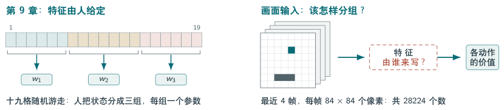
变化有两处。第一，特征交给网络去学：输入是 22 个非墙格的位置独热向量，经 32 个 tanh 隐单元，一次前向给出上、右、下、左四个动作的估值，隐藏层就是学出来的特征。第二，要学的是最优动作价值 ，标签 里要对后继动作取最大，行为则是 -贪心，训练数据来自不断变化的旧策略。
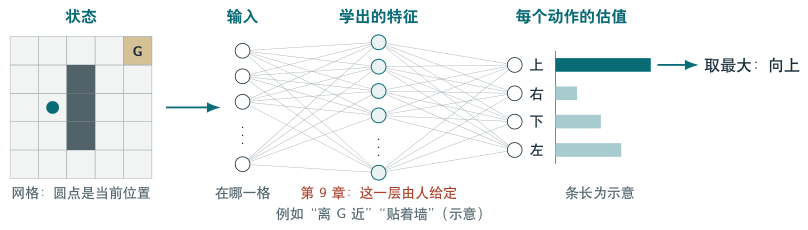
这两处变化让三个困难同时出现。取一条非终止转移 ，后继最大估值 ，，标签 ，TD 误差 。表格 Q-learning 只改所选的一格，；网络把同一个误差写进共享参数，一步 SGD 后，没有收到标签的 也从 升到 ，两个向右的估值则下降。第一个困难是样本前后相关：连着走的几步落在相邻格里，照这个顺序训练，网络只顾得上眼前一小片，别处被顺带改掉。第二个是标签跟着参数动： 正是这条记录标签里的后继最大项，标签随之从 变成 ，回归没有固定的目标。第三个是取最大偏高：估值总有误差，两个动作真值都为 0、各以一半概率估成 时，最大值的期望是 ，偏高的标签又经自举传给前面的状态。前两个困难落在第 9 章致命三元组的离策略与自举两项上，网络本身就是函数逼近，三项俱全；第三个不属于三元组，是取最大带来的偏差。
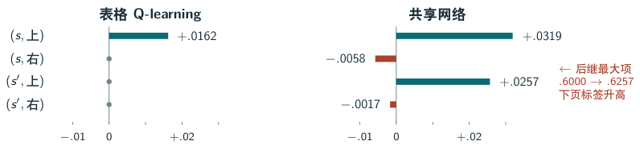
DQN 对前两个困难各加一个缓冲：经验回放从池中均匀抽样，把同批两条记录同区的概率从 降到 ；目标网络让标签读一份每 次更新才复制一次的副本。Double DQN 把取最大的选择与评价分开。这些部件都只减弱困难，三元组的三项仍然都在（10.2、10.3 节）。
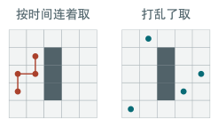
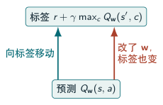
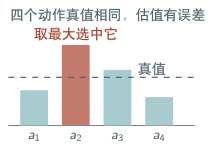
不同意见。 三个困难并非网络独有。取最大偏高在表格 Q-learning 中已经存在（第 6 章的最大化偏差）；前两个困难在线性函数逼近中也出现，第 9 章的反例只用了两个参数。网络让共享范围更大、更难预料，困难因而加重。所以也有人主张，把本章的问题归到函数逼近 + 自举 + 离策略，比归到深度更准确。
在固定策略下，价值预测可以只问给定行为会产生什么回报。控制还要用估计值决定接下来采取什么动作。对有限动作的折扣 MDP，DQN 沿用 Q-learning 的目标 ，用网络共享动作价值的表示。一次更新既可能改变下一次选择，也可能改变较早一步用来学习的后继估值。经验回放缓和新策略对训练数据分布的即时影响，目标网络让若干次更新用同一份后继预测作标签。
本章问题 给定有限动作的折扣 MDP，，奖励有界；模型未知，只能交互得到记录 ， 仅表示任务终止；输入当作马尔可夫状态。动作价值由网络 表示，特征由训练得到。求近似 ，使贪心策略 在环境中的回报高。相对第 9 章，特征由给定变为学习，预测 变为控制 ，行为是 -贪心且训练读回放中的旧数据：致命三元组的三项同时出现。本章研究怎样让这样的自举学习保持稳定，以及每种修正改变了哪条反馈。
一次 DQN 更新是对一个回放小批的回归，损失为
是在线网络的参数，每步都在更新； 是目标网络，即一份定期从 复制来的副本，求导时固定。期望取在对回放池 的均匀抽样下，它给出的状态动作分布记为 ； 表示真终止，此时括号里只剩 。白话：标签 用旧副本算，误差只回传到实际执行过的那个动作。后面各节主要改三处：抽样分布（优先回放、探索方式、固定数据），标签 （Double、多步、分布式），网络 的结构（Dueling、带噪声的权重）。这个式子只描述一次梯度更新。行为策略决定下一批能采到什么，它不在这一次梯度里（10.8 节）；Rainbow 一类组合方法同时改几处（10.6 节）。下表列出各节：10.1–10.6 是主线，每行留下的困难由下一行处理；10.7–10.9 是专题；10.10 讲怎样评价。
| 节 | 方法 | 解决的困难 | 留下的困难 |
|---|---|---|---|
| 10.1 | 朴素网络 Q 学习 | 一次前向给出全部动作估值，特征可学习 | 一次更新改写许多估值，标签又读同一网络 |
| 10.2 | 经验回放与目标网络 | 回放打散相关并复用数据；目标副本在两次复制间固定标签 | 损失按回放分布 加权，仍是旧行为的混合；两条回路只被拉长、分段 |
| 10.3 | 拟合 Q 迭代 | 把 DQN 看成一轮轮固定标签回归 | 每轮回归精确收敛，外层 仍可每轮放大 倍 |
| 10.4 | Double DQN | 分开选择与评价，减小取最大的偏高 | 选错动作时偏低；两网相关 |
| 10.5 | Dueling、优先回放、多步目标 | 改网络结构、抽样概率和自举步数，仍估计期望回报 | 多步目标含行为动作；只学回报的均值 |
| 10.6 | C51、QR-DQN、NoisyNet、Rainbow | 学回报分布；探索噪声放进权重；六项合成一个智能体 | 动作仍按分布均值排序；组合仍无一般收敛保证 |
| 10.7 | Ape-X、R2D2 | 多行动者加快采样；循环状态把窗口外的线索带到决策时 | 奖励稀疏时仍采不到成功经验 |
| 10.8 | Bootstrapped DQN、RND、NGU、Agent57、Go-Explore | 深度探索与新奇奖励；先回到再探索 | Agent57 用到约 780 亿帧；新奇不等于有用 |
| 10.9 | 回放比、自预测与重置；离线一端 | 用计算换交互；固定数据见第 12 章 | 网络越用越僵；固定数据集无法补采 |
| 10.10 | 实测回报与区间估计 | 按贪心策略的环境回报评价，报告区间 | 估值误差小不等于贪心策略好；本例换一组三次运行，差值从 变到 |
| 小结 | 价值学习与策略梯度 | 对照两种表示行为的方式 | 须枚举动作；连续动作见第 11 章 |
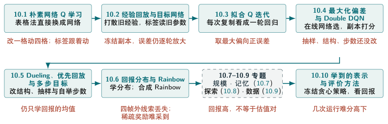
深度表示与参数共享
回报、价值和策略的定义不因神经网络而改变。第 9 章先用固定特征推导投影方程，再考察共享参数怎样改变动作排序。DQN 用最优性目标训练表示 ，再由输出层形成价值、策略或模型。高维图像、复杂几何关系和多种传感输入于是可以通过同一训练目标学习特征。对不同输入的泛化关系也随训练改变，一条经验既修改当前预测，又改变下一条经验会影响哪些输入。
固定特征时，，一次更新沿 修改读出。特征相同的输入共享变化，但这种共享关系不随训练改变。可学习表示写为 ， 由参数 给出。对固定标签 ，令 ，一次梯度更新同时包含
第二项改变表示，也改变后续经验对其他输入的影响。回归本身使用熟悉的链式法则；RL 额外需要解释标签如何由奖励和预测产生，以及预测为何会进入下一次标签。
这种能力需要与其他问题条件分开。连续状态可以用固定的瓦片编码表示；连续动作还需要解决动作搜索或策略参数化；部分可观测需要适当历史；离线学习需要处理未见动作的后果。使用神经网络不会单独解除这些约束。本章以一个小任务把非线性共享、自举目标与数据采样的关系算清，再讨论这些机制在高维任务中的作用。
10.1 朴素网络 Q 学习的失败课件
DQN 的控制任务采用完整可见的有限网格。5×5 网格的中间三格为墙，动作上、右、下、左，撞墙停留。到右上角 G 奖励 1 并终止，其余每步奖励−.02，折扣γ=.97。训练从 21 个非终点格均匀重置；没有把最短路交给学习器。输入是 22 维位置 one-hot，网络为 22→32 个 tanh 隐单元→4 个动作值。小网格允许独立求出 q*，比较网络预测与最优动作价值。这个配置展示 DQN 机制，没有进行 Atari 像素训练。
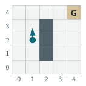
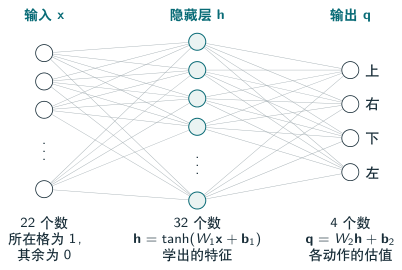
从左下角先向右 4 次、再向上 4 次，折扣回报为 。每一步只观察执行动作的后果，另外三个动作没有当次的真实标签。学习算法要用累积的经验回答这些尚未直接比较的问题。
设动作集合有限。Mnih 等将最近四幅预处理后的 画面按时间叠成输入 。例如一枚光点可从左边向右移动，也可从右边向左移动，最后恰好到达同一位置。只看末帧，两条轨迹相同；看四帧中先后出现的位置，就能区分这两种运动。若决定后果的线索最后一次出现于四帧之前，两段历史仍可能映成相同输入。Mnih 等（2015），图 1 及 Methods
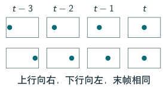
这样合并历史会改变一步更新能估计的对象。固定目标网络，记 ，其中真终止时 ，否则 。若同一个 合并的两种历史各自有不同的目标均值， 就要按行为策略 在这些记录中产生的历史比例加权。例如，两种历史执行 后立即终止，奖励分别为 1 和 0；前一种占四分之一或四分之三时，条件均值分别为 或 。这个差异在使用表格、没有自举时也存在。后文一步 Q 更新能复用旧策略转移，前提是给定真正的 MDP 状态和动作后，奖励与后继状态的分布固定。经验回放和目标网络会改变训练样本或标签的更新方式，无法替输入补回遗漏的线索。
以下把这样的输入视为状态，仍记作 。 是近似动作价值 的简写，试图逼近执行动作 后、随后采取最优行为的动作价值 。它不是动作概率，没有和为 1 的要求。执行时可采用 -贪心：多数时候取 ，少数时候随机选择。这样价值网络与行为分布仍是两个对象，探索概率由行为规则给出。
图像经卷积和非线性层形成共享特征，最后一层同时输出各动作值。一条样本只直接回归实际执行的动作坐标，却也会通过共享隐藏参数改变其他动作和其他图像上的预测。这个泛化连接使学习可扩展，也使错误不再局限于一个表项。
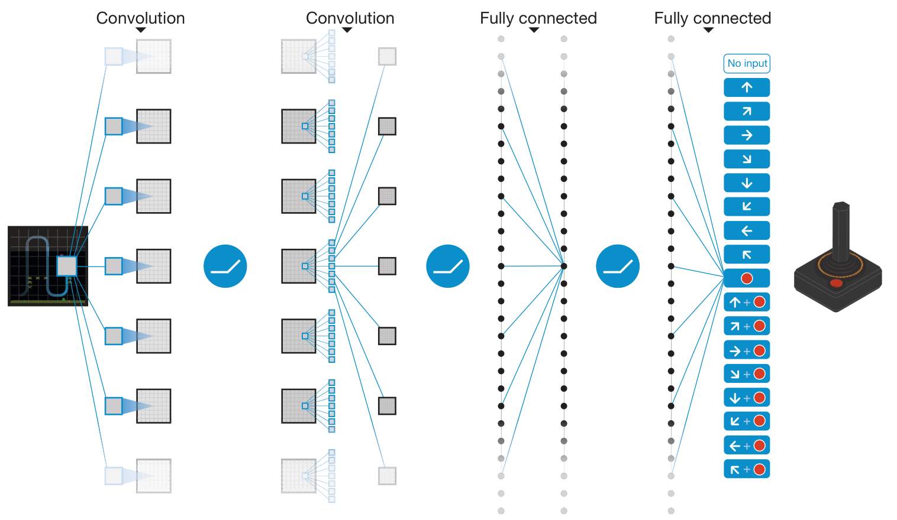
一条终止记录对共享预测的影响
同一小网格可以显示这种参数传播。在位置 向右进入 ，获得奖励 1 并真正终止，因此本次标签固定为 1。对输出向量求导，只有右动作分量直接非零：。
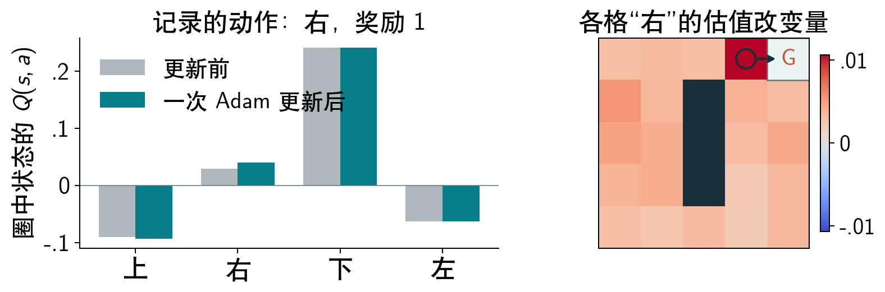
图使用一次随机初始化的 网络和步长 。为隔离单条记录的作用，批次含同一条终止记录的 32 个副本，执行一次已有的 Adam 更新。所执行动作的输出从 增至 ，其他三个输出也略有变化。右图只有圆圈处提供本次直接标签，其他格的右动作值仍因共享参数而改变。
这次计算没有刷新目标网络；终止标签也不使用尾值。它展示一次固定目标回归怎样改变共享预测，未包含长期训练表现。共享输出权重的导数另用有限差分核对。1
在有限折扣 MDP 中，记 表示这次转移结束任务，其余转移取 。终止时把整个后继项定义为零，无须在终点选择动作。最优动作价值满足
它不是现成的监督标签，因为右侧仍有未知的 。Q-learning 以当前估计替换后继值，用实际一步样本替换条件期望。DQN 再使用目标副本 ，对回放中的记录 构造
表示当前回放分布， 只在任务真正终止时成立。更新在线参数 时固定目标副本、记录和目标。因此
固定标签回归可以逼近旧函数的 Bellman 更新。先规定状态动作权重 ，再按真实条件转移分布生成后果。对固定的旧函数 ，有 ，由条件方差分解得到
平方损失的条件最优预测是标签均值。课程网格用这个损失；原 Atari DQN 将误差导数裁到 ，等价于 Huber 损失的梯度，大误差时两者的拟合目标会有差异。上式第二项与本轮待拟合的 无关，因此平方回归把 逼近到当前函数类中，误差折中由 决定。有限回放池把真实条件后果换成经验后果；有限优化又只近似求解这次回归。它们分别是目标抽样、函数逼近与求解误差。该回归梯度针对固定标签损失，和直接对真实策略回报 求梯度有不同含义。
用一个随机格子把学到的平均值算出来。取 ，在泥格 执行某个动作后，以 的概率仍留在泥格，副本在那里读 ，样本标签 ；以 的概率到达终点并终止，标签 。令 ，平方误差分解为 第二项与 无关，所以单独拟合这一格时最小点是 ，正是 这一坐标。若池中恰好只存了两次原地停留，经验均值为 ，网络学到的就是 ：回放池决定了平均是对哪些后果取的。
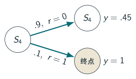
不同意见。 这个学到条件均值的结论依赖平方损失。原 Atari DQN 把 TD 误差的导数裁到 ，相当于 Huber 损失，大误差区段的最优点更接近中位数一侧；随机奖励很重时，两者学到的数并不相同。另一种看法认为这点差别在实践中次要，裁剪主要是为了稳定梯度尺度。
每隔 次学习更新复制 ，再重新计算更新目标。目标副本让后继预测在若干次优化中保持不变；更新当前预测时不必同时改变标签。它没有提供额外的真实后果数据。
在同一网格中，从 向上移动到 ，奖励 ，未终止。一次随机初始化的目标网络在后继状态输出 ，所以标签为 。在线网络对当前动作的预测为 ，误差为 。一次 SGD 按 更新全部相关参数。
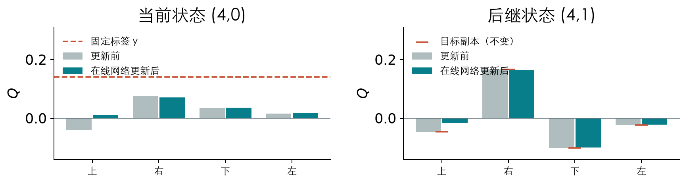
当前上动作预测变为 。共享参数同时改变后继状态的在线预测；目标副本用独立数组保存，因此其后继预测仍为原数值。这就区分了两种操作：停止梯度规定本次求导路径，目标副本规定标签使用哪个参数版本。数值可独立核对2；本图采用一次 SGD 显示公式，原长期训练使用 Adam。
DQN 的反向传播
写列向量 、，执行动作 的损失为 。令 为第 个坐标为 1 的单位向量，则
是对激活前 的梯度。直接输出梯度只出现在执行动作的坐标。隐藏偏置与输出矩阵跨状态共享，它们改变以后，其他状态动作预测也会改变。批量损失的梯度是逐样本梯度的平均；Adam 维护梯度的一、二阶统计来形成实际参数步长。本课 NumPy 实现使用行向量批量，所以矩阵写为 XW₁与 HW₂；这只是转置约定。独立中央有限差分检查 20 个参数坐标，最大误差约 ，验证的是固定目标回归梯度。
把表换成网络课件
先回到表格 Q-learning。下表是第 6 章算法的写法，第 4 行只改所选的一格。
算法 10.1 表格 Q-learning
给定步长 、折扣 、探索率 与交互预算 ，表 任意初始化。
| 行 | 操作 |
|---|---|
| 1 | 在当前状态 按 -贪心选动作 。 |
| 2 | 执行 ，观察 、 与终止标志 。 |
| 3 | 若 ，；否则 。 |
| 4 | 。 |
| 5 | 终止或截断时重置到新起点，否则 ；重复至预算用完。 |
| 6 | 返回 ，按 贪心行动。 |
最直接的移植是：第 1–3 行不动，把第 4 行换成一次梯度更新 ，每走一步用刚得到的转移更新，标签里的后继估值也从同一个网络 读出。这样做会在两处出问题。
第一处在样本。连着走的几步落在相邻的格里，连续许多次更新都为同一小片状态用力。表格里别的表项不受影响；网络的参数是共用的，为这一小片做的修改会把别处的估值一并改掉。第二处在标签。仍取章首那条转移，一步更新后预测 从 升到 ；后继估值也升了，标签跟着从 升到 。更新前两者相差 ，更新后相差 ，只缩小了 。表格里同一步把预测加 ，标签不动，差距缩小 ；网络里预测与标签一起往上走，追赶的效果大半被抵消。单次更新的复算程序
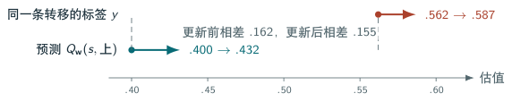
两处问题各有一个处理：样本问题把转移存起来、打乱了抽（经验回放）；标签问题让标签改读一份暂时不动的参数（目标网络）。10.2 节讲这两个处理。
不同意见。 朴素移植并不总是失败。Tesauro 的 TD-Gammon 用神经网络、按顺序在线更新、标签读同一网络，在双陆棋上学得很好；有人认为掷骰子带来的随机性本身已经打散了样本。另一些研究者指出，在线同策略的 TD 配合小步长也常能稳定，出问题的组合多与离策略的 有关。所以朴素做法会坏这句话更准确的说法是：在离策略、确定性强、状态相关高的任务上容易坏。
10.2 经验回放与目标网络课件
上一章预测给定策略的 ，这里要找最优动作价值 。从一条非终止记录 出发，Q-learning 用 作目标，谁采到这条记录并不改变当时环境在给定 后的转移规律。行为可以探索，计算目标时仍能取贪心后继。困难在于估计器 ：同一组网络参数给当前和后继的多个动作打分，今天的参数还决定今天采集哪些经验。
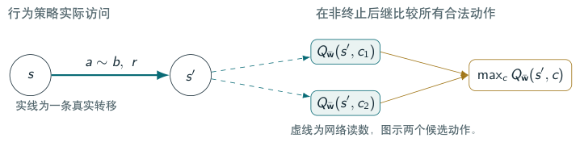
经验回放与目标网络各改一项。 10.1 节的朴素更新坏在两处：一批样本来自同一段时间，连续取两条时同批同区的概率为 ；标签随正在训练的参数移动，差距一步只缩小 。放回全章损失里看，这两处正是期望号下的抽样分布和标签读的参数：
朴素做法每步只用刚得到的那一条转移，抽样分布是一个点质量；回放把它换成池中记录的均匀分布。朴素做法用正在训练的参数算后继估值；目标副本让标签读一份隔 步才更新的参数。两项改动互相独立：只加回放，样本去了相关，标签仍追着 走；只加副本，标签在 步内是常数，一批梯度仍朝一段时间内的同一方向推。代价也落在同两项上：池中样本出自旧的行为策略，所以 DQN 必须是离策略方法，一步取最大的标签恰好不需要重要性权重；标签落后至多 步，价值沿状态链往回传的速度受复制间隔限制。
不同意见。 去相关还有别的办法：A3C 同时运行多个环境，用并行采集代替回放，不存旧数据。也有人认为目标副本只是延缓了发散，10.3 节的两状态例正说明这一点。
同一个 TD 误差 ：表格只改一格，网络改了四格。 在 网格中取一条非终止转移 ，，，后继最大估值 ，。标签 ，TD 误差 。表格 Q-learning 只把 加到所选的一格，得 。网络把同一个误差乘以 写进共享参数；一步普通 SGD 后， 升到 ，没有收到标签的 从 升到 ，两个向右的估值降到 与 。某一格升还是降，取决于它的梯度与所选格梯度的内积符号。单次更新的复算程序
回放改变训练样本。 在有限池中保存真实转移，每次有放回地均匀抽一小批。连续两次更新可以读到相隔很远的环境时刻，一次转移也能重复使用。新策略刚开始多向右走时，曾经向左走的数据仍会用于更新。更新分布因而反映池中多种过去行为的访问频率。没有采到的动作仍缺少直接检验，共享参数在这些动作上的误差还能经由 进入目标。
均匀回放把同批两条记录同区的概率从 降到 。 设八条记录按时间排列，前四条来自区域 A，后四条来自区域 B，批量为 2。按时间连续取两条，等于在七个相邻对中等概率选一对，只有第四、五条跨区，同区概率为 。独立均匀有放回地抽两次，64 个有序对中有 32 个同区，概率为 。两种取法平均每批都含一条 A、一条 B；差别在同一批的组成，连续取样时梯度方向随时间成段漂移。枚举两种抽样
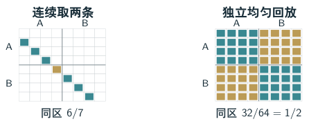
按时间连续取样时，一批记录多来自同一段经历，梯度方向随时间成段漂移。左图两条记录带按时间排列，前一半来自区域 A、后一半来自区域 B，黑框与圆点标出两种取法最近抽到的一批；右图是全批同区的概率随每区记录数 的变化。默认 、批量 2，连续取样为 ，均匀有放回为 ，点“各抽 200 批”可比较经验频率与这两个值。增大批量 ，均匀抽样的同区概率按 下降；连续取样在 时为 ，下降慢得多。
目标网络改变自举的时间。 池中只保存真实后果。每次抽到非终止转移，按当前的目标副本 计算 。接着更新在线参数 。在下次复制前，同一记录的标签固定，网络可以反复拟合它。复制 后，这个标签又依赖刚学到的后继预测。若第 9 章的两状态任务也这样做，对每个固定标签都拟合到平方损失最小，下一轮仍有 。每次复制都把新估计写回标签。把状态访问频率从 0.95 降到 0.20，或在同一访问频率下改变复制间隔，可以分别看到更新方向和变化速度。两状态交互图 · Mnih 等，DQN，Methods 与 Algorithm 1
副本固定期间，在线参数追的是旧标签；复制之后，标签随新估计一起移动。沿用第 9 章的两状态任务，左图是在线 与副本 随内层更新次数的对数变化，虚线是每步都复制（）的对照；右图是折合到每次内层更新的平均倍率随复制间隔 的变化。默认访问频率 、内层步长 ： 时每步乘 ， 很大时每次复制乘 ，曲线始终高于 1。把 降到 ，每次复制的极限倍率变为 ，曲线落到 1 以下。倍率高于还是低于 1 只取决于 是否超过 ，复制间隔只改变放大或收缩的快慢。
复制目标副本后，同一条记录的标签由 升到 。 回到网格中的那条记录。网络一步更新后， 的在线估值成为 ，它正是这条记录的后继最大项。复制之前副本仍读 ，标签保持 ，对新的 误差为 ；复制之后标签变为 ，误差为 。复制间隔 决定在线网络学到的后继变化隔多久进入标签。
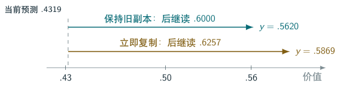
均匀回放按池中的记录条数加权。用上面共享 的任务，池内只有两种终止记录：从第 19 格向右退出得 ，从第 1 格向左退出得 。奖励就是标签，目标副本在这里没有影响。令 为第一种记录的比例。对全池的半平方损失及一次梯度更新有
同样从 开始，。若五条中有四条奖励为正，，第 10 格改选右；只有一条为正，，仍选左。只改样本频率就改变了两项互相冲突的拟合要求各占多大权重。这说的是估计诱导的选择，其好坏还要用任务中的真实回报衡量。
共享参数时，回放池里各类记录的条数决定了没有记录的状态选哪个动作。、 与 共用参数 ， 单独保存；左图是一次全池梯度步前后的四个估值，右图在 平面上把第 10 格改选右的区域 标为红色。默认 、 时 ，第 10 格改选右；把 调到 ，，仍选左。读数第二行是每次只抽一条记录时 的两种取值 与第 10 格改选右的概率。
易错 回放损失的期望取在 下，它是池内多个旧行为策略访问频率的混合，既不是当前 -贪心策略的分布，也不是贪心策略的分布。一步 Q 学习的标签不需要动作比率（后继动作由 选出），但状态动作对的权重仍由旧行为决定。第 9 章的稳定性论证所需的平稳同策略分布，在这里不存在。
只抽一条时， 可能为 或 ，第 10 格改选右的概率为 。在固定的旧参数、回放池和目标副本下，随机步的期望等于上述全池梯度步；由平均参数选出的动作与随机步的动作概率是两个量。固定池的独立抽样也不会消除原始转移在采集时的相关性。Mnih 等，DQN 的经验回放
一句话区别 回放改变损失取在哪个分布下，作用于三元组的离策略一项；目标网络改变标签何时读到新参数，作用于自举一项的时序。共享参数一项两者都不改变。
回放与目标网络各改三元组中的一项，三项仍然都在。 按第 9 章 9.4 节的致命三元组给 DQN 的两个部件分类，每行附本章算出的数：
| 机制 | 改变了什么 | 三元组中的项 | 量出来 | 没有改变的 |
|---|---|---|---|---|
| 经验回放 | 加权分布 ；批内相关性 | 离策略（分布） | 同批同区 | 仍是旧行为的混合 |
| 目标网络 | 标签读到新参数的时刻 | 自举（时序） | 冻结时标签停在 | 两状态例每次复制仍放大 倍 |
回放改变损失取在哪个分布下：同批两条记录同区的概率从 降到 ，池里的分布却仍是过去若干版本行为策略的混合。目标网络改变自举何时读到新参数：两次复制之间同一条记录的标签停在 ，复制时才跳到 ；它没有让外层迭代收敛，10.3 节的两状态例里每次复制仍把误差放大 倍。共享参数一项两者都没有动。三项都还在，DQN 没有一般的收敛保证。van Hasselt 等（2018）在大量 Atari 配置上统计价值估计发散的频率，这些部件降低了发散的频率，没有一项能完全排除。多步目标、Dueling、Double DQN 在三元组中各属哪一项，见本章 10.6 节的全表。van Hasselt 等（2018），Deep RL and the deadly triad · Sutton 与 Barto，§11.3
不同意见。 Atari 上少见发散，不等于固定数据或连续动作下同样安全，第 12 章回到这一点。
两条反馈回路
朴素的网络 Q 学习里有两条回路，每条都是这一步的更新立刻影响下一步的回路。行为回路：网络决定 -贪心中贪心的部分，行为决定下一步走到哪里，走到的转移又立刻用来更新网络；连着走的几步落在相邻格里，连续许多次更新都在改同一小片状态。标签回路：标签里的后继估值由同一个网络读出，更新一次，后继估值变了，标签也跟着变，训练没有固定的回归目标。
DQN 在每条回路上插进一个缓冲。回放池插在行为与更新之间：转移先存进池，更新时从池里均匀抽，同批两条记录同区的概率从 降到 。目标副本插在网络与标签之间：标签读 ，每 次更新才复制一次；若不保留副本，同一条网格记录的标签一次更新就从 变成 。
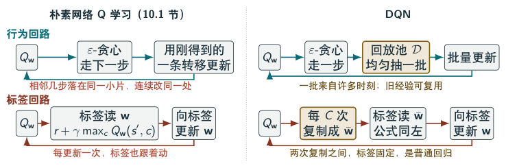
两个缓冲都没有让回路消失。池里的数据仍出自过去的 ，行为回路被拉长；副本每 次仍追上在线网络，标签回路被分成一段一段。课件：两条回路各加一个缓冲 · Mnih 等，Nature 2015
不同意见 加缓冲是对两个部件作用的一种解释。另一种看法认为回放的主要好处在于复用数据、提高样本效率，打散相关性居次；还有一种看法认为目标网络的作用可以部分由更小的学习率代替。两种看法都提醒缓冲有代价：池越大，数据越旧； 越大，新学到的估值越晚进入标签。
终止、截断与自举目标
先分清两件事。执行动作后，环境实际到达了哪个状态？按照任务的回报定义，从那里起是否还会产生奖励？若任务已终止，保留刚收到的奖励，后继价值取零。若只是训练器收足了这一段经验，任务还会继续，就从最后真实后继 自举。取 ，两种标签分别为 和 。任务若规定恰有 次行动机会，到期本身就是真终止。可用随时间变化的价值 ，或将剩余时长纳入状态。
有的环境会在同一步自动重置，把新起点观测直接交还给学习器。此时应取接口保存的末观测，将这个动作实际到达的后继写入回放池，新起点留给下一次行动。若末观测的最大价值是 ，新起点的最大价值是 ，误用新起点会把 写成 。接口若在下一步才重置，步进返回的观测本身就是末观测。具体返回方式取决于环境及其重置模式。时间限制与价值自举 · Gymnasium 自动重置模式
这项错误即使在没有神经网络的情况下也会改变策略。沿用两步决策树：在 A 停下得 ，继续得 并到 B；在 B 可取 或 ，然后终止。设采集器在 A→B 后截断并重置到 A；B 的两种动作另有采样。用同样的单步记录做表格 Q-learning，正确目标给 。把截断写为终止就得到 。把后继错记为新起点则会求解另一个方程 ，其解为 。后二者都会错误地在 A 停下。这是控制了动作覆盖的表格实验，用于分离边界处理本身的影响；前面的 DQN 网格采用同一条自举规则。
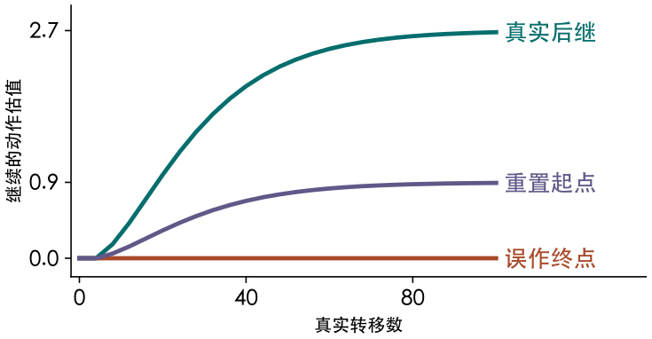
“误作终点”也有恰好正确的时候：若任务真的只给一次行动机会，到 B 时已经没有剩余步数，继续只得 0，在 A 停下就是最优的。边界处理是否算错，由任务的回报定义决定，与采集器在哪里切段无关。Pardo 等（2018）讨论了两种情形各自的做法。任务本身有期限时，剩余时间是状态的一部分，应当放进输入。任务本身没有期限、只是训练按固定时长切段时，若把切段处当作终止，学到的价值就依赖一个环境里并不存在的时钟。输入里又看不到这个时钟，所以同一状态在不同时刻得到不同的标签。正确做法是在切段处照常自举。
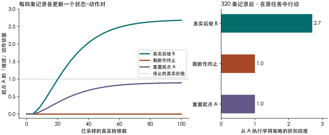
每四条记录分别包含四个状态–动作对。左图跟踪前 100 条记录；右图用 320 条记录后学得的策略，在完整任务中从 A 执行到终止。采样、更新与策略评价 · 逐次结果
DQN 算法课件
算法 10.2 带经验回放与目标网络的 DQN
输入有限动作集、折扣 、探索率、回放容量 、开始学习所需的记录数 、批量 、目标同步间隔 及交互预算。初始化在线参数 、独立副本 、空回放 与梯度计数 。
| 行 | 操作 |
|---|---|
| 1 | 在当前状态 按 -贪心执行动作 ，观察 与边界标志。 |
| 2 | 仅在真正终止时令 ，否则 ；保存 ，超容量移去最旧记录。 |
| 3 | 若 ，跳至第 6 行。否则均匀有放回抽 条。终止记录取 ，其余取 。 |
| 4 | 固定标签，对 做一次梯度更新，令 。 |
| 5 | 若 是 的倍数，以数值复制 。 |
| 6 | 通常在 继续；若终止或外部重置，则取得新起点。外部截断重置前保存最后真实后继，仍以 自举。 |
| 7 | 重复至预算结束，返回 及其贪心策略。 |
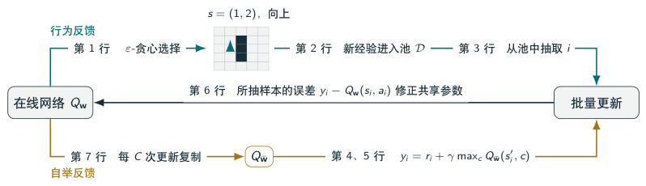
网格程序统计真实交互数 、梯度更新数 和目标同步数。前 127 条记录只入池，以后每条记录触发一次批量为 32 的更新，因此 ，同步数为 ，不含初始化。第 226 次交互结束时，，目标参数仍是初始化值。第 227 次交互先按这份旧副本计算标签、做第 100 次梯度更新，随后才复制，使第 101 次梯度更新使用新副本。公平比较两次实验时，环境经验量和模型更新量可以分别固定。这些时钟和超参数均属于本课的网格实现；原 Atari DQN 的训练日程和优化器不同。
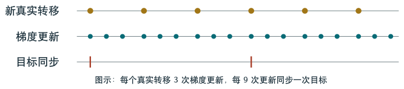
DQN 的小批量更新
初始化在线网络和独立目标副本。每次真实交互先执行 -贪心动作，存实际转移；有 128 条记录后，每步从最多 2000 条的池中有放回抽 32 条。代码中的核心是：
batch = replay[rng.integers(size, size=32)]
si, ai, ri, spi, terminal = batch.T
y = ri + GAMMA*(1-terminal)*target.forward(
FEATURES[spi.astype(int)]).max(1)
net.update(FEATURES[si.astype(int)], ai.astype(int), y)
updates += 1
if updates % 100 == 0:
target.p = [p.copy() for p in net.p]目标是已经算出的 NumPy 数组；反向传播只经过在线网络。副本必须复制数据，不能仅让两个变量指向同一组数组。学习率为 .001， 在 6000 个环境步内从 1 降至 .1；每次训练 10000 次真实交互、9873 次批量更新、98 次目标复制。64 步收集窗口是外部截断，最后转移仍自举，随后才从新的起点继续收集。
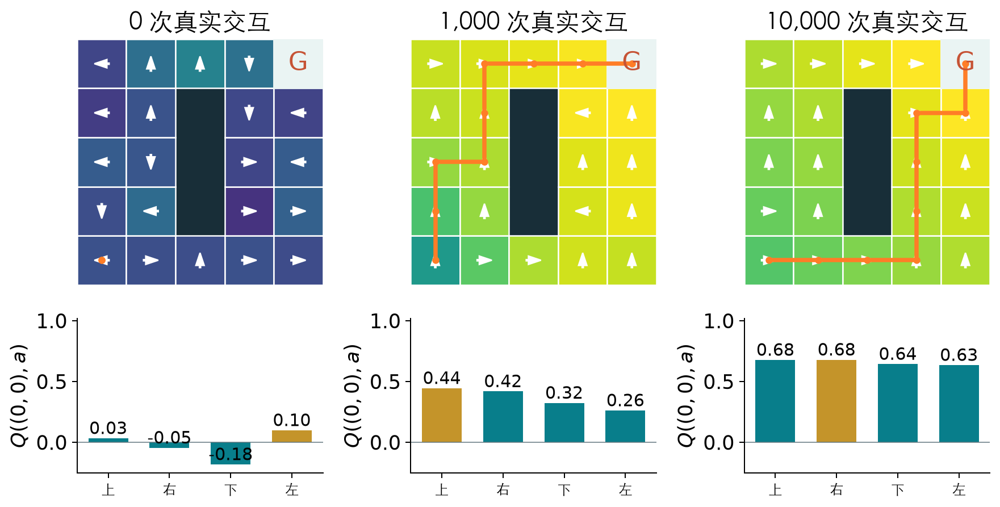
图展示 5 次独立训练中一次运行在 0、1000 和 10000 次真实交互后的快照。颜色为最大 Q，白箭头为当前贪心动作；橙色路线从左下角按这些动作实际执行，遇终点或循环时停止。下面的柱图列出起点四个动作的预测，金色标出最大项。1000 步时，智能体已经沿八步路线到达 G，但起点价值仍低估。10000 步时，上与右都接近最优值；所选路线也为八步。路径改变本身不意味着性能提高，需比较实际回报。所有数值来自保留的 Q 记录，最后快照另与保存的网络参数重算核对。
奖励缩放、裁剪与数值处理
三种裁剪分别截断更新式中的不同因子，其中只有裁剪奖励会改变控制目标。原 DQN 把奖励的符号作为学习奖励，以便不同游戏使用接近的数值尺度。这个处理也可能改变策略的排序。设两个确定性两步方案分别给奖励 与 ，折扣，原回报为 5 与 3.8；将每个正奖励裁剪为 1 后，回报变成 1 与 1.9，偏好反转。若只是把全部奖励乘同一正数，原始回报的排序仍保持，因为。梯度尺度和合适步长会改变；存在熵奖励时，还须考虑奖励尺度与温度的相对关系。
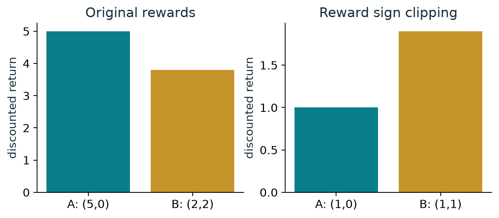
奖励裁剪只是三种裁剪之一，三种截断的是更新式 里的不同因子。取一条终止转移，奖励 ，当前估计 ，局部梯度 ，步长 ，。每次只用一种处理：
| 改变哪一步 | 本次计算 | |
|---|---|---|
| 原更新 | ||
| 把奖励换成符号 | ||
| 把 TD 误差限制在 | ||
| 把梯度范数限制为 |
奖励换成符号后标签变成 1，误差只剩 ，更新缩到原来的七分之一，以后学到的估值也不再对应原来的回报，所以这一种改变了控制目标。把 TD 误差截到 1，标签和目标都不变，只是这一步走得短，大误差样本的影响有了上限，相当于 Huber 损失。把整个梯度的范数限制为 1 时， 的范数是 ，缩放后为 ，再乘步长得 ，同时受残差和网络敏感度的影响。原始 Atari DQN 取奖励的符号，并裁剪 TD 误差。Mnih 等，Nature 2015，Methods
不同意见。 符号函数与数值裁剪并不总相同。原论文把正奖励置 1、负奖励置 、零保持 0。在奖励 4 的样本上两者一致；对 这类小幅非零奖励却不同，符号函数会把它放大成 1。逐样本裁剪残差与批量平均后裁剪总梯度也不同。有人认为奖励符号化在 Atari 上利大于弊，因为它让一组超参数能跑遍几十个游戏；也有人指出它让智能体分不清大奖与小奖，后来的 Pop-Art 等工作改用自适应的目标归一化（van Hasselt 等，2016）。
其他常见处理也应按直接改变的位置区分。输入标准化改变网络输入及数值条件；Huber 损失让大残差的导数有界，改变回归损失；梯度范数裁剪限制一次参数位移，不等同于限制策略 KL；固定正数缩放优势在固定样本和权重时缩放 actor 梯度；熵正则改变期望偏好的行为分布。若均值、方差或尺度由当前批次估计，这些统计量还会依赖当前样本。后面讨论流式与持续学习时，需要进一步考虑统计量如何在有限记忆下跟随变化。
持续学习中的经验与表示变化
本章的实验都采用固定环境规律。行为策略改变首先改变访问分布；目标复制改变自举标签；共享表示训练会改变不同状态之间的泛化关系。若真实奖励或转移也变了，旧记录还对应过去的后果，已经不能用同一(s,a)的条件分布相同来解释其当前有效性。
固定容量回放限制存储，目标副本延缓标签刷新，但二者没有定义如何识别失效后果或保证长期可塑性。可在同一网格中移动出口、保留网络与优化器、固定真实交互和计算预算，比较近期采样与保留旧经验的权衡；这是本章提出而未执行的诊断。第 12 章实际运行一个系数可识别的动态变化任务，观察模型不重置时对新后果的追踪过程。持续强化学习的范围还包括固定世界中的表示、技能与学习能力发展，不能由一次环境突变实验覆盖。
回放滞后可以精确算出。固定一个 ，它的奖励由 0 永久变为 1，取 ，标签就是奖励。已满的池容纳 条记录，每个新样本替换最旧的一条，训练时均匀抽一条。变化后已写入 条新记录时，标签均值为 、 时均值只有 ， 的池此时已全是新记录，均值为 1。池越大，新奖励越慢占满回放；网络拟合还要在这之上再加若干梯度步。这是可解析的计算，不是训练测量。
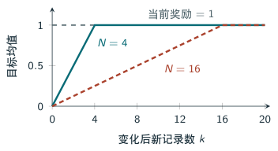
策略漂移、表示漂移和环境漂移可以独立发生；这个例子只隔离了环境漂移。第 12 章讨论同一问题在模型规划中的版本：动力学改变后，模型也必须用新转移更新。
不同意见。 一种主张是给近期记录更高的抽样权重，或干脆缩小池，让标签更快追上新环境。另一种主张是保留旧数据，理由是环境可能变回去，丢掉旧经验会让已学会的东西被遗忘。两者在同一预算下的取舍，取决于变化有多频繁、会不会重现，本章没有实测。
已解决的部分与条件。 环境规律不变时，从固定的池均匀抽样就是从固定的分布 抽样，10.3 节的分析都在这个前提下成立。规律改变一次、只看一个 时，标签滞后可以精确算出，就是上面的 。
已有工作。 有三条路线。第一条改抽样权重：优先回放（Schaul 等，2016）按 TD 误差抽样，新奖励造成的大误差会被先抽到；Fedus 等（2020）发现池容量、回放比与池中最旧策略的年龄相互影响。第二条保留旧经验以防遗忘：Isele 与 Cosgun（2018）按选择规则长期保留部分记录；Rolnick 等（2019）的 CLEAR 混合新旧经验并加行为克隆项。这两条都假设旧记录有时仍然有效。第三条不用回放池：Elsayed、Vasan 与 Mahmood（2024）的 stream-x 方法每步只用当前转移更新一次，靠步长调节和归一化保持稳定。Sutton、Bowling 与 Pilarski（2022）的 Alberta Plan 把这种逐步、每步计算量固定的学习作为基本设定。
未解决的部分及其难处。 智能体不知道环境何时变化、哪些记录已经失效。留得多，旧标签拖慢追踪；留得少，变化重现时要重新学，旧技能也可能被遗忘。最优的取舍取决于变化有多频繁、会不会重现，而这两个量要从经验流里估计。回放比高时还会叠加 10.9 节的可塑性问题。流式方法在多次规律变化下的长期稳定性，证据还少。
怎样检验。 用本章的网格，每隔固定步数移动出口，并让出口位置周期性重现。操控的量是池容量 、近期记录的抽样权重，以及无回放的流式更新；三者在每步相同的计算预算下比较。测量单位是整个 lifetime 的平均回报，以及每次变化后回报恢复到变化前水平所需的步数。重复单位是独立运行，每次运行使用不同的变化时刻表。
10.3 拟合 Q 迭代课件
从精确最优性迭代到拟合 Q 迭代
已知完整模型且使用表格时，更新不需要回归。由 开始，直接反复计算 ，每一轮会把到达奖励的影响向前传播一步。
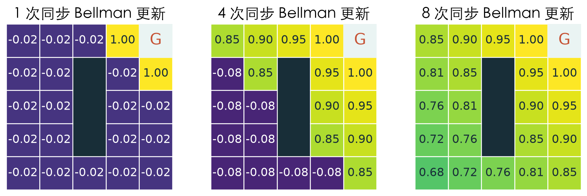
距终点八步的起点，在第八轮才包含终点奖励，其最大动作价值为 。图中的模型计算用于解释迭代关系；神经学习器并不能查询这个完整模型。拟合 Q 迭代改为用实际转移计算 ，再在函数类中回归这些标签。DQN 进一步只做有限次梯度更新，并持续收集新经验。目标采样、函数类和优化分别引入误差。
算法 10.3 拟合 Q 迭代（Fitted Q-Iteration）
给定一个固定数据集 、函数类 与轮数 ；整个过程不再与环境交互。
| 行 | 操作 |
|---|---|
| 1 | 。 |
| 2 | 对 ，固定本轮的 。 |
| 3 | 对每条记录， 时 ，否则 。 |
| 4 | 在 中求 ，使 最小。 |
| 5 | 返回 及其贪心策略。 |
出处：Ernst、Geurts 与 Wehenkel（2005）。他们用回归树集成作函数类；Riedmiller（2005）的神经拟合 Q 迭代（NFQ）改用多层网络，每轮在整个数据集上把网络训练到收敛。把 DQN 写成拟合 Q 迭代的随机近似，就把它接到这条线上：每轮的完整回归换成 次小批量 SGD，数据集换成一边训练一边写入的回放池。
副本之间在做什么。 两次复制之间，DQN 对冻结副本给出的标签做若干次回归。把 读成第 轮的 ，这些小批量训练就在近似算法 10.3 的第 3–4 行。这一段要成为一轮拟合 Q 迭代，还要两个条件：这段时间里采样分布固定（新写入池中的记录不改变 ）；回归做得充分， 次 SGD 接近本轮的极小点。两条都成立时，有 这一节不改损失里的任何一项，只换了对 的读法。能否收敛取决于复合映射 ： 在最大范数下是 收缩，函数类为线性子空间（或闭凸集）时， 是 加权范数下的投影，不扩张；两个范数不同，复合以后可以放大。本节后面的两状态例每轮放大 倍，。函数类为表格时可以证明收敛。评估固定策略 、且 的状态分布等于 的平稳分布时，线性情形的 是收缩（第 9 章）；换成 以后，这一分布条件也不够。两状态例既不是表格，也不满足分布条件。按这种读法，目标网络改变的是更新何时读到新参数，它不决定外层能否收敛；能否收敛由 决定。
不同意见。 另一种读法把 DQN 看成每步一个小随机近似步的 Q 学习，不把复制间隔当成一轮回归。两种读法在两端各自准确： 很大、每段训练接近收敛时，拟合 Q 迭代更贴切； 时更像半梯度 Q 学习。实际的 DQN 落在两端之间。
Q 更新与行为概率
在独立标量输出的情形中，某状态三个动作的估计为 ，行为规则取 ，探索时在三个动作中均匀抽样。当前动作概率为 。一次探索选中第一个动作，真实任务立即终止并返回奖励 8，因此更新目标就是 8。半平方损失的梯度为 ，步长 给出 。新的贪心动作成为第一项，新行为概率为 。
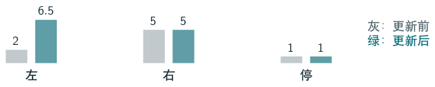
上面的计算只更新被选动作的独立参数。两组更新后的行为概率可用纸笔复算。3共享参数时，同一条经验还可能改变另一个状态的选择。沿用第 9 章的 19 格控制任务。为了单独看清参数共享的作用，设 ，而 。起初 。在第 19 格向右退出得到 。取步长 ，对半平方损失作一次普通梯度更新，得到 。第 10 格没有被访问，该处两项估值的次序却颠倒了。若步长取 ， 只增至 ，左动作仍排在前面。
这一计算可推广到任一固定线性表示 。设本次更新为 ，其中 。在待检查的状态 定义两个动作的估值差 。更新前后相减，精确得到
即使两个动作估值都改变，若改变量相同，估值差就保持不变。在一般可微的非线性网络中，沿单步 SGD 方向，把式中的各个特征换成各预测在旧参数处的梯度，只给出一阶项。例如，仅把第 10 格向右的读出改成 。在旧参数 处，斜率同为 。第 19 格的终止样本仍将 推到 ，但新读出等于 ，贪心动作仍是左。沿此次参数步跨过了 ReLU 折点，用新参数前向计算才能得到实际动作排序。
固定目标的梯度与整个 Bellman 残差的梯度
固定副本时，是当前优化的常量，因而。若把目标也换成当前网络、并让自动微分穿过后继输出，得到的是另一条导数：。其中还包含后继网络的导数，并不是原来的 Q-learning 更新。目标副本使一次内层回归是明确的梯度优化；整个控制过程还会刷新副本、改变数据，因此不能由这一步推出完整算法收敛。
第 9 章的两状态离策略预测任务也可以改用固定标签回归。状态特征为 ，奖励恒为 0，。目标策略总到 ，行为策略以 的概率到 、以 到 ，两状态及两动作均有覆盖。目标动作经过校正后，固定副本的期望标签为 ；函数逼近仍按照行为状态权重折中。
对待拟合的 求导，得到 。因二阶导数 ，唯一最小点是 。每轮精确拟合后再复制目标，参数就从 1 按约 1.6435 倍增长，尽管真实价值为 0，且 能表示真值。系数可以逐项核对： 是两状态特征平方按行为权重的和， 是标签与特征乘积按同一权重的和。
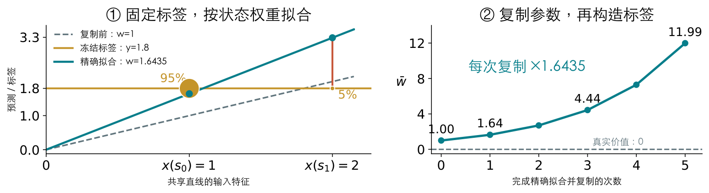
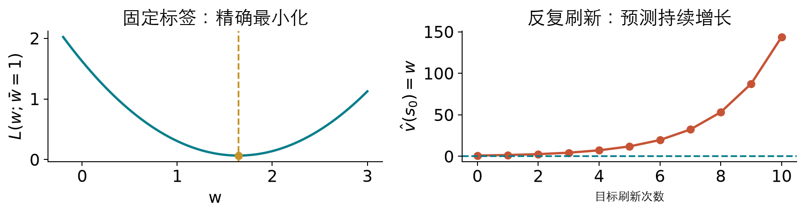
这个计算沿用同一个完整覆盖的预测任务。图左的内层回归可以精确求解；图右的外层仍扩张。停止梯度规定一次更新只对当前预测求导；冻结目标副本进一步让多次更新使用同一组后继预测。复制新参数后，自举目标仍会改变。在当前反例中，共享函数类和状态权重使这一外层映射扩张。DQN 还包含控制中的最大化和采样分布的变化，其稳定性需要考察整个更新过程。
因此有四个不同对象。任务的理想控制对象是 ；固定一个旧函数后，Bellman 更新为 ；对实际转移计算的 是它的样本版本；网络 则以有限参数和有限优化去拟合这些标签。对于固定旧函数与真实条件转移分布，。已保存的有限回放池对应经验分布，仍有抽样、覆盖与目标依赖的误差。表格 Bellman 算子的收缩性质不自动传给 Bellman 更新后再做神经回归的复合过程。
把一次复制周期写成算子，可以分三步看清 DQN 的外层迭代。①标签按 计算、求导时固定，所以一轮训练是固定标签的回归 。②后果按环境转移律出现，用上式的条件均值并展开平方，损失等于 加上与 无关的条件方差，其中 是池中该状态动作对的记录比例。③若每轮拟合到极小点再复制，外层就是 ， 为按 加权的投影。
读法 在最大范数下是 -收缩；函数类为线性子空间或闭凸集时， 在 加权范数下不扩张。两者没有共同的范数，复合映射可能扩张。神经网络的函数类既不是子空间也不是凸集，连 的不扩张也不再有保证；第③步又假定每轮拟合到极小点，实际 DQN 每轮只做 次小批量步，拟合 Q 迭代是它的理想化。上面的两状态例是预测情形（ 代替 ），每轮放大 倍。
按回放频率投影，把收缩后的目标推到更远处。 在两状态例中取 ，它在可表示的直线 上。一步 Bellman 更新得 ，最大范数从 降到 。按 加权投影回直线，，落在 ，最大范数升到 。改用 加权范数读这三个点，依次为 、、：在这一范数下 Bellman 更新放大了向量，投影只缩回一点。
| 点 | ||
|---|---|---|
每个算子只在自己的范数下不扩张；复合后两种范数下都比 大，比值都是 。
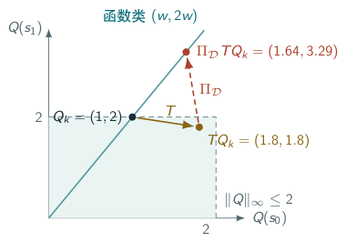
10.3 节的发散例引出一个开放问题：网络、取最大与回放数据同时出现时，深度 Q 学习在什么条件下稳定。已知结果、难处与检验方法见本章末的开放问题。
10.4 最大化偏差与 Double DQN课件
即使每个动作估计各自均值正确，最大值也倾向选择正误差。两个动作真值都为 0，各自独立以一半概率估成 或 。四种组合中只有 的最大值为 ，其余最大值均为 1，所以最大值的期望为 。
一般地，若每个 都无偏，则 。①对每次实现， 对任一固定的 成立；②两边取期望并用无偏性，得 ，再对 取最大。证明不需要各动作估计独立。
这个偏差会改变前一状态的贪心动作。在 A 向右立即终止，奖励 0；向左奖励 0 并进入 B，。B 有甲、乙两个动作，都在下一步终止，各以一半概率得 或 ，期望都是 。故 ，。给甲、乙各独立采一次奖励作为估计，再用 作 A 左动作的标签：
| 左动作标签 | ||
|---|---|---|
四种结果等可能，。把左动作估值设为 、右动作取已知的 0，重复独立采样时，贪心策略以 的概率选真实价值较低的左动作。最大化偏差为 。这个例子改编自 Sutton 与 Barto 第 2 版例 6.7，保留原任务分支，改用两个动作和两点奖励，以便精确枚举。
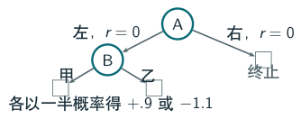
易错 目标网络不消除这项偏差。冻结的副本只让标签在一段时间内不变，副本本身仍是含噪估计，对它取最大的选择效应照样存在；正偏差还会经自举传回更早的状态。在课件的 A–B 任务中，左动作真值 ，标签均值 ，偏差 ，贪心策略以 的概率选左。
放回全章损失里看，Double DQN 只改标签中的 一项。原来的取最大可以写成先选后评，选和评都用副本；改法是让在线网络选、副本打分： 刚复制完、 时两式相同。若选动作的噪声与打分的噪声独立、打分无偏，新标签的期望不超过 ；两网相关时只部分消除偏高，因为副本是在线网络几千步前的拷贝。
不同意见。 偏低也有害；在动作少、噪声小的任务上，Double 的收益可能很小。另一条路是第 11 章 TD3 的做法，用两套独立训练的评论者取较小值，有意偏低以换取稳定。
Double DQN 把动作选择与数值评价分开：
在线网络决定准备选择哪项动作，目标副本给这项动作打分。若在线值为 、目标值为 ，普通 DQN 用 6，Double DQN 用在线选出的第一项所对应的 2。在上面的等真值例子中，若评价误差独立于选择动作所用的估计且均值为零，选定动作后的期望估值就回到 0。实际的两个网络通过参数复制相连；刚复制时，两种方法给出同一标签。即使两个网络完全独立，若真值有高低，选错动作仍会损失回报。van Hasselt 等，Double DQN
回到 A–B 任务，看谁选、谁打分。两次计算都用转移 ，，标签就等于读到的后继估值。第一次在线网络与副本读数相同，都是甲 、乙 ，两种方法都给 。第二次在线网络改为乙 、甲 ，副本不变；Double DQN 按在线选乙，从副本读出 ，DQN 仍在副本内取最大，给 。两次的真实最优后继价值都是 。
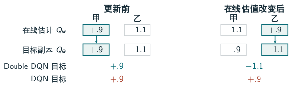
偏差要按重复采样的均值算。记在线估计 ，副本读数 ，，，。以概率 令副本与在线共用同一组读数，其余时候为每个动作独立重抽。 是两网读数相同的概率： 相当于刚复制完， 相当于两组互相独立的估计。共用时被选中的估计均值为 ，独立时所选动作的评价均值为 ，所以 副本的边际分布不随 变，DQN 的标签均值一直是 。表格的 Double Q-learning（van Hasselt，2010；第 6 章）维护两张独立更新的表，一张选、一张评，接近 的一端；Double DQN 不另训一套网络，用延迟的副本充当第二张表，落在两端之间。
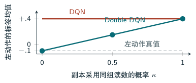
算法 10.4 Double DQN 的小批量更新
输入与初始化同算法 10.2。
| 行 | 操作 |
|---|---|
| 1 | 在当前状态按 -贪心执行动作，观察奖励、后继与边界标志。 |
| 2 | 保存记录；池满时覆盖最旧的一条。 |
| 3 | 若 ，跳至第 8 行；否则均匀有放回抽 条。 |
| 4 | 对 的记录，，。 |
| 5 | 时 ，否则 。 |
| 6 | 固定 ，对 做一次优化步，只更新 。 |
| 7 | ；每 次复制 。 |
| 8 | 终止或截断时重置，否则 ；预算用完后返回 。 |
与算法 10.2 相比只有第 4 行不同：动作由在线网络选出，估值从副本读取。
一句话区别 DQN 用同一份副本既选动作又评价，标签是 ；Double DQN 用在线网络选 、副本评价 。若 对所有可被选中的 成立，则 ，偏差变为非正；边际无偏不够，实际两网共享训练历史，这个条件未必成立。
动作越多，偏差越大
上面的例子只有两个动作。设 个动作真值都为 ，每个估计 ， 独立服从标准正态，单个估计无偏。标签 的期望偏差是 。每多一个动作，就多一次碰巧偏高的机会；增长多快由误差分布的尾部决定。
| 动作数 | 2 | 4 | 18 | 64 |
|---|---|---|---|---|
| 单估计偏差（以 为单位） | .564 | 1.029 | 1.82 | 2.344 |
| 1.177 | 1.665 | 2.404 | 2.884 | |
| 双估计偏差 | 0 | 0 | 0 | 0 |
单估计一行由数值积分算出，一直在常用上界 之下，两者之比随 增大缓慢趋于 1。 时有闭式：，而 ，，所以偏差是 。随 增长的部分来自正态分布的尾部。若误差都限在 之内，无论 多大，偏高都不超过 ；若误差重尾，偏高可以比 增长得快。Atari 的完整动作集有 18 个动作，按这个模型，每个标签平均偏高约 ，偏高再经自举传回更早的状态。双估计用一组估计选动作，用另一组独立的估计打分；真值都等于 时，无论选中哪一个，打分用的那个估计都与选择独立、均值为 ，偏差恰为零。
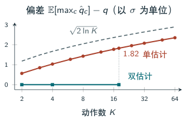
自举目标对含噪估计取最大，动作越多，标签越偏高。左图是单估计与双估计标签的样本直方图，右图是偏差随动作数 的变化，以 为单位，虚线是上界 。真值都为 0、、 时点“连续抽样”，单估计的样本均值靠近 ，双估计靠近 0。切到真值递减并取 ，真值为 ，单估计约为 ，双估计约为 。共用读数概率 让副本以该概率与在线组读同一组数，双估计的均值随 线性移向单估计。
真值不等时情形不同。四个动作真值为 ，：单估计标签的均值约为 。双估计的打分与选择独立，标签均值等于被选动作真值的平均；四个动作被选中的概率约为 ，所以均值为 。双估计一旦选错动作，评到的是较低的真值，于是偏低。Double DQN 用偏低换掉了偏高。课件：独立高斯误差下的动作数与高估 · 计算
不同意见 van Hasselt 等（2016）的定理 1 给出的下界随 减小：在估计误差总和为零、均方误差为 的约束下，无论误差怎样排列，偏差至少为 。这与上表并不矛盾。定理给的是所有误差排列中偏差最小的一种，上表是独立噪声的平均情形；原文图 1 的实验也显示偏差随动作数增长。另一方面，网络中各动作共享特征，误差相互关联；完全相关时取最大没有偏差。实际 DQN 的偏差介于两者之间，大小要实测。
为什么是
上表的单估计偏差一直在 之下，这个界可以三步推出。记 ，。对任意 ，
第一步用 的凸性（Jensen 不等式）；第二步把最大的一项放大成各项之和；第三步是正态分布的矩母函数。取对数再除以 ，得 。右边一项随 减小，一项随 增大，在 处最小，于是 。
直觉上， 个误差中最大的一个，大约落在单个误差超过它的概率为 的位置。正态尾部按 衰减，令它等于 ，解出 。尾部衰减极快，尾部概率缩小 倍，边界只需外移一点。
三点读法。① 增长慢： 时上界为 ，上表的数值积分为 ； 从 2 增到 64 翻了 32 倍，偏差只多约 。② 与 成正比：训练早期估计误差大，偏高也大，又经自举传回更早的状态。③ 第二步没用到独立：网络共享特征、误差相关时，上界照样成立，只是更松。课件：为什么是 √(2 ln K)
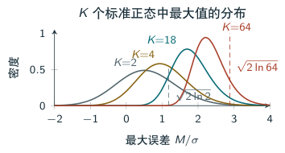
不同意见 推导假设误差服从正态分布。若误差重尾，例如偶尔出现很大的 TD 误差，最大值可以比 增长得快得多，上界不再适用。另外，偏高未必都有害：van Hasselt 等（2016）指出，若所有动作均匀地偏高同样多，动作之间的相对偏好不变，贪心策略不会变差；麻烦出在偏高不均匀的时候。
已解决的部分与条件。 各动作的估计无偏、误差不全为零时，，偏差非负。误差独立同为 时，偏差就是上表一行，随 约按 增长；误差有界时，偏差不超过界。Double Q 学习用两组独立估计分开选与评，表格情形下在与 Q 学习类似的条件下收敛，代价是可能低估（van Hasselt，2010）。
已有工作。 Thrun 与 Schwartz（1993）最早在函数逼近的 Q 学习中分析这种系统性高估，并给出学习因此失败的条件。Double DQN（van Hasselt、Guez 与 Silver，2016）把在线网络与目标副本当作两组估计。TD3（Fujimoto、van Hoof 与 Meger，2018）取两个评论者的较小值，用于连续动作。Maxmin Q 学习（Lan 等，2020）取多组估计的最小值，用估计组数调节偏差的方向与大小。这些方法都假设各组估计的误差近似独立。
未解决的部分及其难处。 网络里各动作共享参数，误差彼此相关。设各动作的误差两两相关系数为 ，可以写成 ，其中 独立标准正态；取最大时公共项不变，偏差缩成独立情形的 倍。所以上表的 只是独立误差下的数，训练中的 与 都不知道，还随训练变化。Double DQN 的副本是在线网络的旧拷贝，两组估计也相关，偏差的符号与大小要实测。偏差还会经自举传回更早的状态，累积多少取决于 和误差在状态间的相关性。
怎样检验。 在同一任务里加入 个与某动作完全等价的复制动作，真值不变，只改 。再操控输出头是否共享躯干，改变 。基准是从同一批状态出发、按学到的贪心策略实际跑出的折扣回报，van Hasselt 等（2016）用的就是这种比较。测量单位是估值减去实测折扣回报，以奖励的尺度为单位。重复单位是独立运行，按状态分组报告。
10.5 Dueling、优先回放与多步目标课件
动作共享、回放分配与多步目标
Double 之后还差什么。 Double DQN 只动了标签里的 。全章损失里还有四项原封不动，每一项都能举出一个失败；10.5 与 10.6 两节的开关逐项去改，10.6 节末的 Rainbow 把它们合在一起。本节先做其中三项：Dueling、优先回放和多步目标。它们只改网络结构、抽样概率和自举步数，学习对象仍是期望回报 。
| 项 | 留下的失败 | 改法 |
|---|---|---|
| 抽样 | 8 格确定性链、终点奖励 1、表格更新且学习率取 1：均匀抽样平均约 64 次更新才把价值传回起点，每次选 最大的记录只要 8 次 | 优先回放 |
| 折扣与奖励 | 一步标签每轮只把价值往回传一格 | 步： 个奖励后接 |
| 损失 | 回报 各半与恒为 5：平方损失学到同一个均值 | C51、QR-DQN：学回报分布 |
| 网络 | 只有所选动作的输出得到梯度，共同的状态价值要逐动作学 | Dueling： |
| 行为 | 固定，与状态无关 | NoisyNet： |
链上的次数这样算：每次只有一条转移的 TD 误差不为零，均匀抽样时每一格平均要抽八次才轮到它，八格共约六十四次；按误差选，恰好八次。代价是抽样分布偏了，要用 校正。多步标签一次回传 格，代价是中间动作来自行为策略。分布方法把损失换成分布之间的距离，动作仍按均值选。Dueling 让一个标量承担各动作共同的部分。最后一行改的是产生数据的行为，NoisyNet 把探索噪声放进权重，让网络自己学噪声大小。
不同意见。 这几个开关并不正交：优先回放和多步都加快价值传播，Rainbow 的消融里去掉这两项时中位成绩降得最多。分布损失为什么有用也有不同解释，一种观点认为它主要通过更丰富的训练信号改善表示，用到分布本身的作用反倒较小。
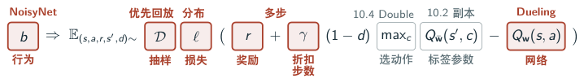
Dueling 网络把动作价值写成 。把各动作的 取算术平均，就得到标量分支 。动作间的差由中心化后的 唯一决定，原始 同时加上任意常数仍给出同一个 。一条执行动作 的记录对原始输出 的损失导数为 ，故其余动作分支也收到梯度。这里的 衡量各动作的共同水平，当前策略的状态价值则按该策略的动作概率加权。
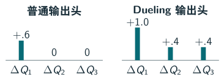
算法 10.5 Dueling DQN 的一次批量更新
记 。网络的共享层之后分出标量分支 与 维分支 。
| 行 | 操作 |
|---|---|
| 1 | 共享特征给出 与 。 |
| 2 | ，。 |
| 3 | 从池中读一批记录；终止记录取 。 |
| 4 | 其余取 ，副本的 同样按第 2 行合成。 |
| 5 | 固定 ，用 同时更新两个分支和共享层。 |
| 6 | 按间隔同步副本。 |
，：每条记录都更新 ，未执行的动作分支也收到 份的梯度。出处：Wang 等，ICML 2016，式 (9)。
一次更新算到底。 三个动作，为看清结构，把 与 当作直接参数（不经共享层）。对动作 1 更新一次，，。普通输出头只有 收到梯度，。Dueling 中 ，，即 ，，于是
好处是没有执行的两个动作也随共同水平一起更新，状态价值不必逐个动作去学。代价有两处：若它们的真值没有变，被带着走的 就是误差，要等以后执行到它们时再改回来；执行的动作本身也走过了头， 加了 ，超过误差 ，相当于步长放大 倍。
优先回放改变从池中抽到各条记录的概率。仍取四条奖励 、一条奖励 的终止记录。在共享预测 处，四条的误差各为 ，另一条为 。均匀抽一条时，更新量除以步长的期望为 。改按 抽样，各条正奖励记录的概率变为 ，负奖励记录的概率为 。这一次，平均更新方向反过来，变为 。要抽到那条负奖励记录，均匀抽样平均要抽 次，按 抽样平均只要 次。
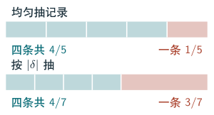
若要保持均匀全池梯度，设池中有 条记录，给抽到的记录乘 ，因为 。这要求全池各条记录均有正抽样概率，并在本次求导中固定抽样权重。上例 ，正奖励记录的权重为 ，负奖励记录为 ，校正后 。部分校正指数 保留部分优先采样的影响。这里加权的是固定池中的记录；行为策略与目标策略的动作概率比则校正同一状态下的动作分布。Schaul 等，Prioritized Experience Replay · 五条记录的精确复算
换一组四条记录，看部分校正怎样介于两端。固定池、参数和目标网络，四条记录的标量梯度为 ，均匀抽样的期望更新为 。按 的比例抽样，概率为 ，不加权的期望更新为 ，被第 3 条主导。给抽到的记录乘 ，期望更新为
时为 ； 时每项变成 ，回到 ； 时四项依次为 ，和为 ，介于两者之间。PER 让 从初值 线性增到 1。训练早期目标还在移动，抽样带来的一点偏差代价不大，高误差记录多抽几次反而加快传播；临近收敛时，偏差会留在最终解里，必须校正干净。权重只修正抽到哪条的频率，池里从没采到的转移，权重补不出来。
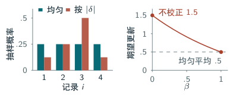
算法 10.6 优先经验回放（PER）：比例抽样与加权更新
输入：优先级指数 ，校正指数初值 ，小正常数 ，批量 ；其余同算法 10.2。记 为第 条记录的优先级。
| 行 | 操作 |
|---|---|
| 1 | 新记录写入时赋当前最大优先级 ；池为空时取 。 |
| 2 | 抽样概率 。 |
| 3 | 按 有放回抽 个下标，记下各自的 。 |
| 4 | 用目标副本算 与 。 |
| 5 | 权重 ，再除以 。 |
| 6 | 最小化 。 |
| 7 | 写回优先级 。 |
| 8 | 按训练进度把 从 线性增到 1。 |
时 ，期望梯度的方向回到均匀全池平均； 时仍偏重高优先级记录。第 5 行的归一化让权重不超过 1：权重只会把步长缩小，稀有记录不会因为 很大而把一步放大；代价是整体步长随之缩放。第 1 行给新记录最大优先级，保证每条记录至少被抽到一次； 保证误差为零的记录仍有 ； 退回均匀抽样。出处：Schaul 等，ICLR 2016，§§3.3–3.4 与算法 1。
一步与多步离策略控制
固定马尔可夫环境中的转移律 ，以及本次分析使用的目标网络 。给定已经执行的 ，一步 DQN 只从环境取得 。它自己在 比较各动作：
真正终止时略去最大值一项。等式左侧对环境的后果分布取期望；行为策略在 实际采取哪个动作，都不出现在这个表达式中。由此可用旧行为的一步记录更新贪心目标，无须乘以后继动作的概率比。均匀回放时，固定的有限池只给出已记录后果的经验平均。若专门选取高误差记录，抽样分布还会进一步改变。Watkins 与 Dayan，Q-learning · Mnih 等，DQN，Algorithm 1
同一动作的两个目标。 在 A，停止得 并终止；继续得 并到 B。在 B，低奖动作得 ，高奖动作得 ，两者都终止。若 B 的两个估值已经准确，一步目标给 A 的继续动作写入 。多读取一步真实奖励，第二次行动的选择就进入了标签。设行为策略在 B 以概率 取高奖。取 ，可将精确条件均值写成下面二十份等权重的计算。
| B 的实际动作 | 分支权重 | A 继续的一步目标 | A 继续的两步目标 |
|---|---|---|---|
| 低奖 | |||
| 高奖 | |||
| 条件均值 |
低于停止的 ，尽管继续并在 B 取高奖本可得到 。随 变化，两步均值是一条直线 ，与停止价值在 相交。只要 ，两种动作都有被选中的机会，但直接用两步均值排序仍选停止。这棵树枚举了所有结果。相反，若 B 的估计尚为零，一步目标也是零，而两步记录已能把 B 的实际奖励传回 A。把回放概率分别取 与 可复算交点。4两步回放与环境代码
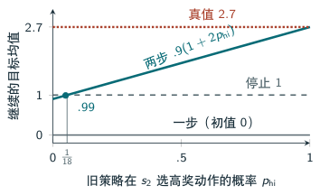
一般地，固定平稳马尔可夫行为策略 ，从当前 自然抽取其连续片段；不按后续奖励筛选片段。标量多步目标及其条件均值为
其中 。从末端向起点倒推，先用 比较末动作，再逐步用 平均每个中间行为动作。若每个中间决策也对相应剩余步数的动作价值取最大，才得到最优更新 ；两种计算可以恰好给出相同的数值。真正终止后尾值取零。记录因采集边界中断时，使用现有的 个奖励和实际末状态的折扣尾值 。Hessel 等，多步 DQN 的标量目标
算法 10.7 用单段连续经验构造多步 DQN 目标
给定最大步数 、折扣 、目标副本 。回放池保留采集顺序、真实终止和重置信息。
| 行 | 操作 |
|---|---|
| 1 | 采样片段起点 ，置累计奖励 、累计折扣 。 |
| 2 | 对同一段交互中接下来的至多 条转移，依次读取 ，其中 表示任务终止。 |
| 3 | ，；保存当前后继 。 |
| 4 | 若 ，置 并停止；若采集截断，保留 并停止。 |
| 5 | 若 ，；否则 。 |
| 6 | 对批内各起点，以固定的 拟合 ；按 DQN 的间隔同步副本。 |
截断不等于终止，只在片段末端自举。池尾不足 步且尚无边界时，等待收齐再用；截断后的尾值从重置前的观测计算。
估计哪种后续行为。 若要评价固定的后续策略 ，重要性比率负责把实际采样动作的分布改为 。本例令 在 B 总取高奖动作。给定起点已经执行继续，且 ，第二步的比率在高奖分支为 、低奖分支为零。因此 的期望为 。当 时，95% 的样本给零，5% 给 。有覆盖使期望正确，稀少的关键动作会使单条估计波动很大。一般的动作概率比评价选定的策略；要得到多步最优更新，还需要决定每一个后继状态应当选什么动作。
Retrace() 也用旧轨迹，但它从当前 出发，累加目标策略的 TD 误差 。后来的误差乘以沿途的 （原文记作 ）。例如两步截断目标是 。这会限制远处误差的影响。仍用 ，取 和上述固定 ，首次两步更新目标的期望只有 。固定点为 与从任意初值用一段数据就能无偏估出 ，是不同的结论。原文评价定理讨论期望算子及其相对于 的收缩，控制还要规定策略序列与采样、更新条件。Munos 等，Retrace，式 (3) 与定理 1
10.6 节的 Rainbow 组合在 Atari 实验中取 。它使用实际的中间奖励，由在线网络按回报分布的均值选末动作，再从目标网络取得该动作的回报分布，平移、缩放并投影到固定的原子上。三步奖励项不乘逐动作的重要性比。其优先回放的权重针对抽到了哪条记录。论文在其余组件保持的条件下去掉多步学习，57 款 Atari 游戏的人类归一化得分中位数下降；这项比较度量的是训练后的控制表现。Hessel 等，Rainbow，The Integrated Agent、表 1 与图 3
10.6 回报分布与 Rainbow课件
10.5 节的三项改进都还在估计期望回报 。本节换掉估计对象：先学整个回报分布（C51、QR-DQN），再把探索噪声放进权重（NoisyNet），最后看 Rainbow 怎样把六个部件合在一起，以及消融实验说明了什么。
回报分布与价值学习
随机回报 的均值就是 ，但完整分布还描述了不同结果的概率。固定策略的分布 Bellman 方程是 。固定状态、首动作、后续策略与环境之后， 的随机性来自两处：环境的转移与奖励，以及策略 自己的动作抽样。环境完全已知时这种随机性也存在；样本再多，也只让分布的估计更准，消不掉分布本身的宽度。参数估计的不确定性是另一回事，它随数据增多而收窄。
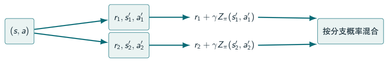
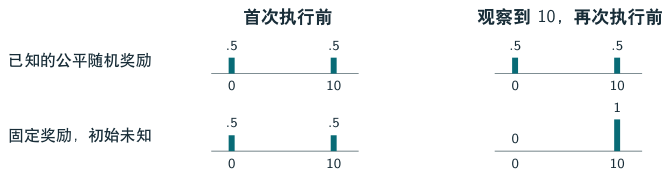
评价时分布 Bellman 算子是收缩。 用 1-Wasserstein 距离 量两个分布的差，它是把一个分布的质量搬成另一个所需的最小平均搬运距离。设某个后继的两个候选分布为 ： 各半，： 各半；把每份质量右移 1 就从前者得到后者，。代入奖励为 的一步转移，右边 与 的支撑变成 与 ，距离变为 ：平移不改变距离，乘 把距离缩小 倍，按分支概率混合也不会把距离放大。所以固定策略的分布 Bellman 算子在对所有 取最大的 距离下是 -收缩，评价时的迭代收敛到唯一的 （Bellemare、Dabney 与 Munos，2017，引理 3）。控制时动作按分布均值选，最优性算子一般不再是这种距离下的收缩，同文给出了反例。C51 的投影与交叉熵损失又不直接最小化 ，所以这条收缩只说明评价的目标是良定的，不保证算法收敛。
C51 选择固定回报原子，学习各原子的概率。更新先平移缩放后继分布的位置，再把目标质量插值分给相邻原子，最后最小化交叉熵。若目标恰落在格点上，应把完整质量加到该格点；边界裁剪会改变均值。QR-DQN 反过来固定等概率质量，学习分位点位置。损失 的期望次微分为 ，所以最优位置满足 ；没有原子概率时才退化为单值导数。实际 QR-DQN 使用平滑的 quantile Huber 损失；IQN 把分位数本身作为网络输入。
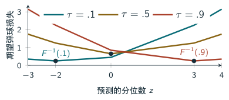
最小点不一定唯一。回报以各半概率取 或 时， 的期望损失在 上恒为 ，区间内每一点都是中位数；这正是上式次微分写成区间 的原因。
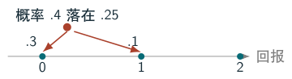
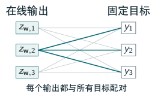
算法 10.8 C51 的分布投影与分类更新
以 个等距原子 表示回报，间距 。网络在每个动作上输出概率 ，行为按均值 作 -贪心选择。
| 行 | 操作 |
|---|---|
| 1 | 对 DQN 回放批次中的每条转移 ，初始化目标概率 。 |
| 2 | 若 ，待投影的值与质量只有 ；否则转第 3 行。 |
| 3 | ，取各对 。 |
| 4 | 对每对 ，令 ，，。 |
| 5 | 若 ，令 ；否则转第 6 行。 |
| 6 | 按相邻距离分配同一份质量：，。 |
| 7 | 固定目标 ，对 的批次均值执行一次优化步。 |
两份分配权重之和为 1。支持区间内的质量投影保留均值；超界裁剪可改变均值。出处：Bellemare、Dabney 与 Munos，ICML 2017，算法 1。
算法 10.9 QR-DQN 与 IQN：风险中性的分位数更新
沿用算法 10.2 的交互、回放及定期复制。每个动作预测回报的分位数，行为对预测回报的均值作 -贪心选择。以下是一批样本的学习步骤。
| 行 | 操作 |
|---|---|
| 1 | 对每条记录 ，取三组分位水平：当前预测 、目标 、选动作 。 |
| 2 | QR-DQN：三组都用固定中点 ，读第 个输出。 |
| 3 | IQN：三组均独立采自 ，把每个水平输入分位函数 。 |
| 4 | 若 ，对所有 取 ；否则以副本的分位均值选 ，取 。 |
| 5 | 对所有配对求 ；固定 ，按批内 的平均值作一次梯度下降。 |
为阈值 1 的 Huber 损失。两个算法的差别只在第 2、3 行：QR-DQN 固定分位水平，IQN 把分位水平也当作输入。出处：Dabney 等，QR-DQN（AAAI 2018）与 IQN（ICML 2018）。
C51 的交叉熵梯度与动作选择
终止奖励投影到回报格点，目标概率为。若初始 logit 为零，当前三项概率各为。将 softmax 展开，，因此。取步长 1，只更新这组独立 logit，得到，概率约为。新的动作均值从 0 变为。
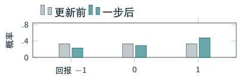
若另一动作的均值保持，这一次概率更新就使贪心动作改变。共享网络下不能假设另一项完全不动：实际反向传播为，隐藏参数可能同时影响别的动作。概率预测、均值计算与动作选择是相接的三步，而非互相独立的输出。本课以交叉熵的有限差分核验导数、更新后概率与均值；这说明局部学习机制，没有将单次动作切换称为总体性能优势。
去掉优先回放或多步目标，Rainbow 的中位成绩降得最多。 Hessel 等（2018）在 57 个 Atari 游戏上每次从完整组合中去掉一个部件，各运行 2 亿帧，比较人类归一化分数（随机智能体为 0%，人类专家为 100%）的中位数。原文报告，完整 Rainbow 在 57 款中的 53 款上胜过去掉优先回放和去掉多步目标的两个版本；去掉分布学习的版本在前 4000 万帧与完整版无差别，之后落后；去掉 NoisyNet 时，有几款游戏大幅下降、另一些略有上升，中位数变差；去掉 Dueling 时中位数无显著差别，去掉 Double 时差别有限。训练结束后重评最好的快照，无操作起始下完整 Rainbow 的中位数为 223%，人类起始下为 153%，DQN 分别为 79% 和 68%（原文表 2）。原文对 Double 作用小给出的一个解释是：回报分布的支撑截在 ，实际回报常超过 10，截断带来的低估抵消了取最大的高估。按中位数的降幅排，优先回放与多步最大，其次是分布学习，再次是 NoisyNet，Dueling 与 Double 最小。Hessel 等，Rainbow，Analysis 节与表 2
各部件作用于不同环节：Double DQN 修改更新目标，Dueling 修改表示，PER 修改抽样，多步方法修改传播长度，回报分布学习修改预测对象，参数噪声修改探索。组合效果需要消融检验。
| 从完整 Rainbow 去掉 | 原文观察（Hessel 等 2018，图 3 与消融一段） |
|---|---|
| 优先回放、多步 | 中位成绩降得最多；57 款中的 53 款上完整版胜过这两个去除版本 |
| 分布学习 | 前约 4000 万帧与完整版相同，之后才落后 |
| NoisyNet | 中位数变差；各游戏有升有降 |
| Dueling、Double | 中位数差别小 |
原文只给定性描述和曲线，没有给各去除版本的最终数值，所以表里不写数。在这组 Atari 实验中，优先回放与多步回报对中位成绩的贡献大于 Double 对最大化偏差的修正。
NoisyNet。 普通 DQN 用动作层面的随机选择探索， 固定、与状态无关。NoisyNet 令全连接层的权重和偏置取 ，同一噪声样本随输入产生不同的动作估值，噪声尺度 随 TD 损失一起学习。
算法 10.10 NoisyNet-DQN：使用可学习的参数噪声
| 行 | 操作 |
|---|---|
| 1 | 初始化 （ 非零）、目标副本 和经验池。 |
| 2 | 行动前抽取零均值噪声 ，按 贪心行动；将真实转移入池。 |
| 3 | 到训练时刻时从池中取一批记录，独立抽在线噪声 与目标噪声 。 |
| 4 | 整个批次共用这两次抽样。终止时 ，否则 。 |
| 5 | 固定 和噪声，对批平均 更新 与 。 |
| 6 | 按期复制 ，继续交互。 |
第 2 行改变了行为策略，第 5 行学习扰动尺度。原算法每次回放优化后重抽行为网络噪声；一次行动配一次优化时，每个行动步得到一次新抽样。出处：Fortunato 等，ICLR 2018，§4 与附录 C.1。
算法 10.11 Rainbow 的交互与一次批量更新
给定 C51 格点 。对状态 ，Dueling 两分支按格点合成各动作的分数，再沿格点做 softmax 得到 ；动作均值记 。
| 行 | 操作 |
|---|---|
| 1 | 建在线及目标网络、优先池；用 NoisyNet 抽样后的在线均值 贪心行动。 |
| 2 | 按算法 10.7 累计至多三步，以当前最高优先级存 ；真实终止取 。 |
| 3 | 预热后按优先级抽批并保存校正权重 ；进入一次更新时取各网络的噪声样本。 |
| 4 | 每条记录若 ，投影点质量 ；否则用在线均值选 。 |
| 5 | 用目标网络给 分配质量 ，按 C51 投回原格点得 。 |
| 6 | 缓存 ；固定目标，对 更新 。 |
| 7 | 写回 ，下次按 抽样；按期同步目标副本。 |
六个部件各占一行：NoisyNet 在第 1 行，多步在第 2 行，优先回放在第 3、7 行，Double 在第 4 行，C51 在第 5、6 行，Dueling 在网络结构里。优先级改用 KL 而非 TD 误差。出处：Hessel 等，AAAI 2018，The Integrated Agent。
本课的复现代码包含可运行的 C51 投影、精确分位数损失、100 组概率质量检查和回放修正算例。5它们是可独立检查的算法子机制；完整作者实现与论文见章末书目。
五种修正与三元组课件
10.2 节按第 9 章 9.4 节的三元组给回放与目标网络分了类。到这里本章的主要修正都已出现，可以放进同一张表：
| 机制 | 改变了什么 | 三元组中的项 | 没有改变的 |
|---|---|---|---|
| 目标网络 | 标签读到新参数的时刻 | 自举（时序） | 外层 不一定收缩 |
| 经验回放 | 损失的加权分布 、样本相关性 | 离策略（分布） | 仍是旧行为的混合 |
| 多步目标 | 自举项的权重降为 | 自举（权重） | 中间动作来自行为策略，方差增大 |
| Dueling | 的参数化 | 函数逼近（结构） | 参数仍共享，标签与分布不变 |
| Double DQN | 的选择与评价分开 | 不属于三项 | 只处理最大化偏差 |
表里没有一行去掉三项中的任何一项。目标网络和多步目标都只动自举一项，一个改时序，一个改权重；回放只动离策略一项的分布；Dueling 只改函数逼近的结构；Double DQN 处理取最大带来的选择偏差，不在三项之内。所以 Rainbow 把它们合在一起，仍没有一般的收敛保证。
外循环
到 Rainbow 为止，各方法改的都在损失式之内：抽样分布、目标里的步数、选动作的方式、标签参数、网络的输出形式；Rainbow 把其中六项合在一起。后三节的主要改动在包着这个式子的外循环上：数据由谁去采、按什么策略采、采一步之后更新几次。也有改表示、目标和参数的：R2D2 把输入换成历史，SPR 加一项自预测损失，重置改的是参数从哪里重新开始。
| 节 | 困难 | 改动 | 代价 |
|---|---|---|---|
| 10.7 | 墙钟时间长；单帧看不出运动 | 多个行动者并行采集；序列回放与循环网络 | 计算与环境副本；数据的离策略程度变大 |
| 10.8 | 奖励稀疏，-贪心采不到成功 | 改行为策略、加内在奖励、回到存档状态 | Agent57 最难的游戏用了约 780 亿帧 |
| 10.9 | 交互只有 10 万步 | 提高回放比、定期重置、加自预测损失 | 每步计算增多；推到头就成了离线问题 |
10.7 节的困难是墙钟时间：单个智能体按游戏的速度交互，训练要很多天；一帧画面又看不出运动方向。10.8 节的困难是探索：前面各项改动都假设好经验会进入回放池，奖励稀疏时这个假设落空。10.9 节反过来，交互只有十万步，要把每条记录用足；回放比推到头就是完全不再采集，这是第 12 章的离线问题。落到损失式上，10.7 与 10.9 主要改抽样分布 ，10.8 改行为策略与奖励 ，R2D2 还把网络的输入从单帧换成历史。三节的目标相互冲突：10.8 为了探索用了约 780 亿帧，10.9 要在交互极少时把每条记录用足。三节是专题，可以按时间取舍。
10.7 多行动者与序列回放课件
规模与记忆改哪项。 Rainbow 仍是一个行动者、四帧输入。问题分两半。第一半在抽样分布：数据只能按一个环境的速度进来，所有经验共用一个探索率。第二半在网络：线索出现在四帧以前时，同一画面对应不同的回报， 区分不了。Ape-X 改 的来源，R2D2 再改网络的输入： 左式是 个行动者各用自己的探索率 采集、写进同一个池；右式把四帧输入换成循环网络压缩的历史 ，回放的单位也从一条转移变成一段序列。两处改动各有代价：行动者越多，池中样本的行为策略越杂、越旧，离策略程度加大；循环状态存进池子时是用旧参数算的，回放时与当前参数不一致，R2D2 先用 40 步预热再算损失。
不同意见。 规模换来的主要是墙钟时间，交互帧数反而大增，按每帧计的样本效率未必更好；10.9 节要处理的正是相反的情形。
Ape-X：行动与学习分开
问题 单个行动者在一个环境里顺序采集，行动与更新在同一进程里交替（Nature 版 DQN 每 4 个决策步更新一次）。网络更新再快，数据也只能按一个环境的速度进来；而且只有一个 ，探索强度固定。计数时要把帧、决策步和梯度更新分开：跳帧为 4 时，一个决策步是 4 帧。
Horgan 等（2018）的 Ape-X 把两件事交给不同的机器。许多行动者各有一份环境，用最近收到的参数按 -贪心行动，把转移写进同一个优先回放池；学习者按优先级抽样更新，把新的 TD 误差写回作为优先级，并定期把参数发回行动者。行动者 用 ，第 0 个为 ，最后一个为 ，各自在整个训练中保持不变；原文用 台行动者，各占一个 CPU 核。新转移的初始优先级由行动者自己算出的 TD 误差给定，连同转移一起写入，学习者不必为新数据再算一遍。这一结构后来成了 R2D2、NGU、Agent57 共用的骨架。课件：一个行动者采得太慢 · Ape-X，ICLR 2018
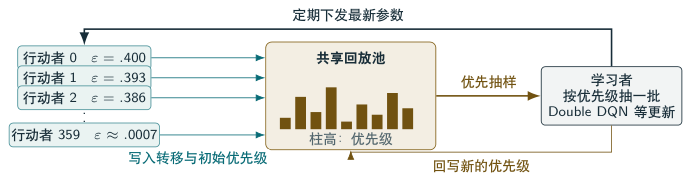
不同意见 Ape-X 用计算和环境副本换墙钟时间，按每一帧数据算，样本效率没有提高；10.9 节的 Atari 100k 设定恰好反过来，只给十万步交互。行动者用的参数总落后于学习者，池里的数据来自许多不同的旧策略，离策略的程度更重。优先级也会过时：一条记录的优先级是写入或上次被抽到时的 TD 误差，网络更新后真实误差已经变了，没再被抽到的记录一直带着旧优先级。
观测窗口与序列回放
本章开头把输入当作马尔可夫状态。DQN 的输入是最近几帧叠在一起（帧堆叠，原文取 ），能分辨运动方向，更早的线索却不在输入里。一个最小的例子：走廊起点亮一盏灯，红或绿各一半；智能体走 步到岔口，灯红向上、灯绿向下才得奖励 1。岔口处的输入是最近 帧。
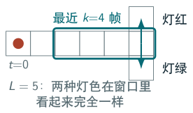
在岔口用表格 Q 学习，、 的每种组合学 4000 回合，贪心策略选对的比例只出现两个值： 时为 1， 时为 .5。没有中间情形。灯在窗口外时，两种灯色给出同一个输入，最好的做法也只能各猜一半；这一点与学习算法、回放次数和网络大小都无关。加长窗口只把界限往后推，输入维数还随 线性增长。
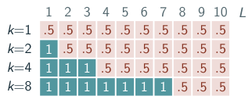
另一条路是让智能体自己维护一个状态 ，例如循环网络，灯的信息可以一直带到岔口。Hausknecht 与 Stone（2015）的 DRQN 把 DQN 的全连接层换成 LSTM，是较早的尝试。课件：线索在窗口之外 · 计算 · DRQN
有了循环状态，回放的单位变成一段序列。难处在序列开头的 从哪里来：行动时 一步步算出，从池里随机抽出一段时，开头的 要另行给出，而网络参数在此期间已经变了。有三种做法。
| 做法 | 开头的 | 问题 |
|---|---|---|
| 零初始 | 行动时这个位置的 并不是零，序列前几步的状态从未在行动中出现 | |
| 存储状态 | 行动时存下的 | 开头对上了，但 出自旧参数 |
| 存储 + 预热 | 行动时存下的 | 前一段只做前向、不计损失，让 在当前网络下重新跑一段，再用后一段训练 |
存储状态的问题与 10.2 节回放旧经验同类，这次过时的是网络自己的内部状态。衡量三种做法的办法是：同一段序列，按回放时的 与按行动时的 各算一次 Q 值，看相差多少。Kapturowski 等（2019）的 R2D2 做了这项比较；R2D2 的最终做法是存储状态加预热：每段 80 步，相邻两段重叠 40 步，另加 40 步预热前缀；整个结构沿用上一小节 Ape-X 的多行动者与优先回放。课件：回放整段序列 · R2D2，ICLR 2019
不同意见 灯的例子刻意让线索与决策之间隔着完全不提供信息的走廊。在许多 Atari 游戏里，四帧已经含有决策所需的大部分信息，循环结构的收益因游戏而异。帧窗口是固定的、不需要学的记忆；循环状态要靠梯度学会该记什么，线索与奖励相隔很远时同样困难，长程信用分配并没有因为换了结构就消失。另外，这一系列成绩以交互和计算为代价。Agent57 在前 50 亿帧内有 51 个游戏超过人类基准，最难的 Skiing 用了约 780 亿帧；10.9 节的 Atari 100k 只给 40 万帧，相差四到五个数量级。引用它们时要先说明比较的是什么预算。
10.8 稀疏奖励下的探索课件
探索改哪项。 前面各项都默认好经验会进入回放池。奖励稀疏时，-贪心几乎采不到成功：下面的 10 格链上，逐步 -贪心首次到达终点的概率为 ，行动者再多，每个仍是逐步掷骰子。首次成功之前，优先回放只能重抽奖励为零的记录；回放与优先级都只能重排已经进池的经验，不能产生新的经验。本节的方法改产生经验的那一环，在损失里体现为三项： Bootstrapped DQN 改行为的时间尺度，随机性从每步一次变成每回合一次，同一 10 格链上成功概率由 升到 。RND 与 NGU 改奖励，在外部奖励上加一个新奇奖励； 时学到的是另一个任务的最优策略。Agent57 让各行动者用不同的 ，再用老虎机挑选。Go-Explore 不在损失里，它改起点分布：先回到存档中有希望的状态，再从那里探索，这要求环境能恢复到存档状态。
不同意见。 Go-Explore 的作者认为难点在于找到过的好状态回不去，奖励稀疏是次要的，所以改起点比改奖励更直接；反对者指出，能恢复任意状态的环境在现实中少见。
长序列探索与 Bootstrapped DQN
价值网络能够表示长期后果，取得说明这些后果的经验仍然是另一个困难。考虑一个回合必须连续向右十次才能取得奖励 1 的任务。任何一次向左都立即以奖励 0 结束。设所有动作价值从 0 开始，首次成功之前也一直保持 0，贪心并列时固定选左。若采用两动作均匀探索的 -贪心，，每步向右的概率只有 0.1。一回合首次到达奖励的概率是 0.1 的十次方。即使完全独立地均匀选动作，成功概率仍只有二的负十次方。
保持起点的动作概率相同，仍可得到完全不同的探索行为。假定两个固定的价值函数头对每格各有一个唯一的贪心动作：一个处处向左，另一个处处向右。每步独立等概率重抽一头，十步全向右的概率是 。若只在回合开头等概率抽一头，成功概率为 。第一步向右以后，已经到达第二格就透露了抽中的是哪一个头；其余每一步向右的条件概率都是 1。重抽时没有这种跨步联系。
Bootstrapped DQN 在回合开始均匀抽取一个价值函数头，整回合按该头贪心行动。不同头对自己的目标网络做时序差分更新，可以借助不同的随机初始化及经验掩码形成不同估计。它让一个关于长期价值的假设有机会支配整段行动。能否取得新经验，还取决于所抽的头支持什么行为。若冻结 个确定性头，其中只有 个在本链每格都选右，每回合抽一次的成功概率就是 ；若 ，延长保持同一头的时间也到不了终点。这里规定的两种头用来比较采样方式，原论文在另外的链环境中训练并评价了学得的策略。
算法 10.12 Bootstrapped DQN：每个回合固定一个价值头
给定 个不同初始化的动作价值头 、各自的目标副本及回放池，各头可共用特征层。每条记录对每个头独立地以概率 保留。
| 行 | 操作 |
|---|---|
| 1 | 每个回合开始，，取得起点。 |
| 2 | 以 行动，观察 。 |
| 3 | 写入转移与 位掩码 ；之后回放沿用该掩码。 |
| 4 | 预热后抽一个批次。对头 ，只用 的记录；空子批跳过。 |
| 5 | 若终止 ；否则 ，。 |
| 6 | 汇总各非空头的平均平方误差，更新这些头和共享层；按期复制副本。 |
| 7 | 回合内令 ，重复第 2–6 行；回合结束才重抽 。 |
时各头读同一批数据，差异只来自随机初始化。出处：Osband 等，NeurIPS 2016。
参考：Osband 等，Deep Exploration via Bootstrapped DQN，§§3、5，图 2–4；Berkeley CS 285，探索。
RND：预测误差当奖励
问题 Montezuma’s Revenge 要连续做对许多步才得第一分，逐步掷骰子的探索几乎碰不到它。表格里可以数每个状态来过几次，像素画面几乎不会完全重复，计数无从做起。
Burda 等（2019）的 RND 随机初始化一个网络 ，参数从此固定；再训练一个预测网络 在走过的状态上模仿它，内在奖励取 。 是固定的确定函数。常见画面训练机会多，误差小；新房间、新物体的画面误差大，内在奖励把智能体引向那里。误差大致随访问次数下降，但这只是近似。误差由预测网络的泛化决定：与旧画面相似的新画面也可能误差小，与得分无关的随机变化也可能误差大。总奖励为 ，外在、内在两部分各用一个价值头估计。原文表 1 中，RND 在 Montezuma’s Revenge 上平均 8,152 分，人类平均 4,753 分；摘要称它是第一个不用示范、不读游戏内部状态而超过人类平均成绩的方法。课件：RND：没见过的画面预测不准 · RND，ICLR 2019
不同意见 新奇不等于有用：预测误差会把智能体引向任何没见过的画面，包括与得分无关的画面。去过的地方预测越来越准，那里的奖励随之消失，智能体要靠价值函数记住怎样回到有希望的地方，做不好就出现下文 Go-Explore 所说的脱离。系数 也要调，太大时智能体只顾找新鲜。
NGU：回合内也要求新
问题 RND 的奖励随训练衰减，一处去过多次就不再有奖励，可这一回合也许还没到过那里；像素里与行动无关的闪烁也会显得新。
Badia 等（2020）的 NGU 把新奇分两层。回合内一层：把本回合到过的状态的嵌入 存进记忆，新状态与其中 个近邻的距离都大时，回合内奖励 就大；记忆每回合清空，这一层奖励每个回合都会重新出现。嵌入由逆动力学训练，即从 猜 ，只留行动能影响的信息，原文称之为可控状态。整个训练一层：RND 的误差改作放大系数 ，
内在奖励的权重 太大时不顾得分，太小又探索不到。NGU 同时学 个策略，第 个学 ， 即只看游戏分数，折扣 从 变到 ；32 个策略共用一个网络，以 为输入，数据进同一个池，结构沿用 R2D2。课件：回合内也要求新 · NGU，ICLR 2020
不同意见 的策略在追新奇，数据里含有与得分无关的行为， 的成员也要从这些数据中离策略地学。NGU 把各档固定分给不同的行动者，哪一档值得多执行不随训练调整，Agent57 改的正是这一点。另有意见认为可控状态的定义本身是一种先验：要先拿起钥匙才能控制的东西，起初不会被视为可控。
Agent57：用老虎机选探索强度
问题 32 档里哪档最好，因游戏、因训练阶段而异：开局需要大胆探索，后期需要接近只看得分。外在、内在奖励的尺度又差得远，混在一个价值头里不好学。
Badia 等（2020）的 Agent57 做了两处改动。选档：32 档是 32 条臂，每回合由一个滑动窗口 UCB 老虎机选一档执行，这条臂的奖赏是该回合的游戏得分；只看最近一段回合，早期和后期可以选不同的档。拆头：外在、内在各用一套参数估计 与 ，行动时按 合起来，两种尺度互不干扰。原文称它是首个在全部 57 个 Atari 游戏上超过人类基准的方法；前 50 亿帧内已有 51 个游戏超过，最难的 Skiing 用了约 780 亿帧。课件：用老虎机选探索强度 · Agent57，ICML 2020，PMLR 119:507–517
不同意见 按样本效率看，这些帧数比 10.9 节 Atari 100k 的 40 万帧多四到五个数量级：一个问交互足够多时能否把每个游戏都做好，一个问交互很少时能学到多少。以超过人类基准为标准，还依赖人类基准分本身怎么测（见 10.10 节）。
Go-Explore：先回到，再探索
问题 新奇奖励有两种失败。脱离（detachment）：奖励把智能体引向一处，探完之后它忘了别处还有没探完的入口。偏离（derailment）：要回到远处的前沿，得先走一长段已知的路，路上的随机探索动作把它带偏。
Ecoffet 等（2019；2021）的 Go-Explore 把回去与探索分开。它维护一个存档，单位是格子：画面缩成 、灰度压成 8 级，缩完相同算同一格；每格记下到过时的最高得分和到达它的动作序列。每轮按去得少、得分高的标准挑一个格子，先回到那里，再从那里随机走一段，遇到新格子或更好的路线就写回存档。找到的高分轨迹最后用模仿学习（原文的 Backward Algorithm）训成能应对随机性的策略，原文称这一步为稳健化。2019 版在 Montezuma’s Revenge 上平均超过 43,000 分，约为当时最好结果的 4 倍；用领域知识定义格子时超过 650,000 分；Pitfall 约 60,000 分。回到格子有两种办法：恢复模拟器保存的状态，或把存档里的动作序列重放一遍，确定性环境中两者等价；2021 年的 Nature 版另给了训练一个以目标格子为条件的策略、靠它走回去的版本。课件：先回到，再探索 · Go-Explore，arXiv 2019 · First return, then explore，Nature 590:580–586
不同意见 靠恢复模拟器状态回到格子，用到了真实世界里一般没有的能力。因此它与其他方法的比较条件不同。格子的定义（缩图大小、灰度级数）是人选的，换一个游戏要重新调；用领域知识定义格子时分数高出一个数量级，也说明这一步作用很大。存档按得分和访问次数挑格子，依赖环境确定或接近确定。
一条线：从 Ape-X 到 Agent57课件
2018 到 2020 年，DeepMind 在 Atari 上有一条主线，每一步沿用前一步的分布式骨架，补一个困难：Ape-X 处理一个行动者采得太慢；R2D2 处理四帧之外的线索会丢；NGU 处理奖励稀疏、采不到成功经验；Agent57 处理该探索多少因游戏而异。RND 从外部接入，在 NGU 中作放大系数；Go-Explore 不加新奇奖励，与主线并列；本节开头的 Bootstrapped DQN 用多个价值头的分歧做深度探索，也不改奖励。各系统同时改了方法与资源，交互帧数与计算量逐代增加；只看最终得分，分不开机制与资源各自的贡献，要在同一游戏、相同帧数下比较才能分开。课件：一条线
不同意见 排成一条线，容易让人以为后一个全面胜过前一个。各方法的计算预算和交互帧数相差很大，比较时没有对齐。另一种意见认为，这条线代表的用计算换分数的做法与 10.9 节的样本效率方向相反，两者应分开评价。
已解决的部分与条件。 有限状态动作的表格情形下，按访问次数加探索奖励有样本复杂度保证，例如 MBIE-EB 的奖励与 成正比（Strehl 与 Littman，2008）。这类结论要求能准确计数，状态空间有限。
已有工作。 伪计数（Bellemare 等，2016）从密度模型导出近似计数；RND 用预测误差代替计数；NGU 加回合内新奇；Bootstrapped DQN 用随机价值头做时间上一致的探索；Go-Explore 先回到存档再探索。这些方法都假设新奇的状态更可能通向奖励。
未解决的部分及其难处。 深度网络里的计数由泛化决定，没有保证。与得分无关但不断变化的画面，预测误差一直偏高；Burda 等（2019）在基于前向动力学预测的好奇心方法上演示过这种失败。评价也有混淆：各系统同时改了方法与资源。Taiga 等（2020）把几种探索奖励接到同一个 Rainbow 上，在 Montezuma’s Revenge 上得分提高；但在全套 Atari 上，它们没有明显胜过 -贪心，在一些容易探索的游戏上还更差。
怎样检验。 固定基础智能体与交互帧数，只换探索方法；基准是同一配置下的 -贪心。游戏集合同时包含难探索与易探索的游戏。测量单位是每个游戏首次得到外在奖励所需的帧数，以及固定帧数下的人类归一化得分。重复单位是每个游戏上的独立运行，按游戏分别报告，再给区间汇总。
10.9 数据效率课件
交互少时改哪项。 10.7、10.8 节用海量交互换成绩，Agent57 最难的 Skiing 用了约 780 亿帧；Atari 100k 只给约 111 分钟的游戏时间，是常规设置的 。这一节几乎不改损失里的项，改的是包在损失外面的那层循环：
是回放比，决定同一个 被反复用几次； 是辅助损失，例如下文 SPR 的自预测，在奖励稀少时也给表示训练信号；第二式是重置，把部分参数换回初值 。Nikishin 等认为 大时网络会对早期数据拟合过紧、失去可塑性，重置用来恢复它；这是一个假说，下文给出检验它的做法。交互为零时，抽样分布固定为一个数据集，取最大会挑中数据中没有的动作，本节末尾只给出问题，方法放到第 12 章。
不同意见 重置被批评为补丁：它说明可塑性会丧失，却没有解释为什么丧失。另一种主张是改网络结构与归一化，使高回放比下无须重置。
每步更新几次
交互昂贵时，一个自然的想法是每走一步多更新几次，把已收集的经验用得更充分。每走一步做的更新次数叫回放比。先在表格情形下看它：没有网络的副作用，看到的只是重用经验本身的效果。十个随机生成的 迷宫各有 12 堵墙，最短路都是 12 步；表格 Q 学习，，步长 .5，；每走一步先用当前转移更新一次，再从池里均匀抽其余几条各更新一次。得分取从所有可达格子出发、按贪心策略行走的平均，0 表示 40 步内到不了终点，1 表示走最短路。每个回放比 10 个任务各 8 次运行。
| 回放比 | 得分到 .9 的步数 | 总更新次数 | 1500 步时得分 |
|---|---|---|---|
| 1 | >1500 | .651 | |
| 2 | 1300 | 2600 | .924 |
| 4 | 700 | 2800 | .975 |
| 8 | 500 | 4000 | .974 |
| 16 | 400 | 6400 | .962 |
回放比从 1 到 2，1500 步时的得分从 .651 升到 .924。之后每翻一倍，到 .9 所需的步数依次少 600、200、100，而总更新次数从 2600 涨到 6400：省下的交互越来越少，花掉的计算越来越多。回放比 16 最后停在 .962，略低于 4 和 8，差距很小，这里不作解释。
表格中每个格子的参数彼此独立，重用经验不会伤害别处。网络就不同了。Nikishin 等（2022）称之为首因偏差：网络在早期对少量数据拟合得过紧，之后很难再被新数据改变，回放比越高越严重。他们每隔一段时间把网络最后几层重新初始化、保留经验池；对 SPR 只重置最后一层，Atari 100k 上的 IQM 从 .380 升到 .478。这个结果说明重置在该设定下有用，不单独证明首因偏差这一机制：重置也改变了随后的行为策略和采到的数据。检验机制可以固定一批数据，比较重置前后的网络拟合一个新目标所需的更新次数。课件：每步更新几次 · 计算 · 首因偏差
不同意见 表格实验给出的是经验重用的上限，网络实验给出的是网络的副作用，两者混在一起，容易把回放比该多大当成有普遍答案的问题。Fedus 等（2020，Revisiting Fundamentals of Experience Replay，ICML 2020）发现回放比与回放池容量、池中最旧策略的年龄相互影响，三者要一起调。重置在工程上有效，原理上尚未讲清，它丢弃的表示里也有有用的部分；持续学习部分讨论的可塑性丧失是同一现象的长期版本。
重置为什么有效、可塑性怎样度量，是本章末开放问题的第二个问题。
两小时的游戏课件
常规 Atari 设置训练 2 亿帧，每秒 60 帧约 38.6 天。Atari 100k 只许走 10 万步，跳帧 4 即 40 万帧，约 111 分钟，是前者的 。评价用 26 个游戏，按人类基准归一化：0 为随机策略，1 为人类测试者的得分。
| 方法 | 增加了什么 | Atari 100k |
|---|---|---|
| SPR（2021） | 在隐空间预测几步后的隐状态 | IQM .380 |
| 重置（2022） | 定期重置最后一层 | IQM .380 → .478 |
| SR-SPR（2023） | 重置后回放比升至 16 | 随回放比升高 |
| BBF（2023） | 网络加宽 4 倍、15 层残差网络，回放比 8 | IQM > 1 |
IQM 是中间一半运行的均值：去掉最高与最低各四分之一再平均，见 10.10 节。SPR 原文报告的人类归一化中位数为 .415；表中 .380 与 .478 取自 Nikishin 等（2022）的同一设置。
SPR 的编码器把画面压成隐状态 ，一个学到的转移模型按动作在隐空间里往前推几步；另一个参数取滑动平均的目标编码器把真实的后续画面也压成隐状态，训练让两者的余弦相似度变大。这项损失与 Q 学习共享编码器。奖励稀少时，Q 学习每一步只有一个标量误差去训练整个编码器；预测隐状态每一步都给编码器一个高维信号，不依赖奖励。这与第 8 章的模型学习相通，区别在于这里的模型只用来塑造表示，不用来规划。BBF 的作者报告，单纯加大网络很难保持性能，要与重置等设计配合才能得益。课件：两小时的游戏 · SPR · BBF · SimPLe
不同意见 样本效率只计环境交互，不计计算。BBF 每走一步做八次更新，网络又比 DQN 大得多，墙钟时间和算力远超两小时的游戏本身；交互便宜、计算昂贵时，排序会反过来。人类基准来自一位测试者的成绩；IQM 只看中间一半的运行，超过 1 不等于每个游戏都比人强。这类方法的超参数常针对这 26 个游戏调过，换一组任务能否保持，需要另外检验。
不再交互：固定数据中的未见动作
若今后都只能读取原有记录，贪心目标仍会查询未执行的动作。设每次都从 得零奖励到 ，在 只见过动作甲得 并终止；未见的乙也立即终止，奖励可以是 或 。两份网络在 均输出 时，DQN 和 Double DQN 都为 构造标签 ，仅凭这些记录无法判断它偏向哪一边。保守 Q 学习（CQL）压低数据外动作相对记录动作的估值，推导、数值与多决策点的检验见第 12 章 12.2 节。课件：未见动作无从判断
不同意见 压低未见动作也会压低数据外真正更好的动作，例如上例环境二中的乙；离线方法要在误选高估动作和错过更好动作之间取舍，固定数据本身给不出取舍的依据。
10.10 学到的表示与评价方法课件
损失之外的量。 前八节都在减小训练损失 ，评价看的却是冻结贪心策略的回报 ：
只依赖每个状态里动作的排序。对任意函数 ， 与 的贪心策略相同、 相同， 却可以差很多。反过来，两个动作估值很接近时，一点误差就会翻转排序，损失小也不保证回报高。回放比、重置、网络大小都按回报曲线挑选；下面的网格上，两种方法回报同为 ，价值误差相差约 倍。所以要分别量回报与估值误差，并用多次运行的区间作比较。本节先看网络学到了什么，再回到网格看误差和回报，最后讨论运行次数。
不同意见 控制任务的目的就是回报，有人主张只报告回报；另一种意见认为估值误差反映方法是否学对了问题，迁移到新任务或继续训练时更有预测力。
价值先于奖励升高。 Mnih 等（2013）画过 Seaquest 中连续 30 帧的 。三个画面截自同一段游戏，潜艇向左发射鱼雷：敌人进入画面时（A）估值跃升；鱼雷尚未命中时（B）预测已接近峰值；敌人消失后（C）预测回落。奖励在命中时才到来，估值提前几帧升高：网络输出与随后的得分相关。自举目标把后继价值传回当前状态，能产生这种提前预测；单条曲线分不清训练中起作用的是不是这个机制。Mnih 等 2013，图 3
Mnih 等（2015）还把 Space Invaders 游戏中经过的状态在最后一个隐藏层的表示用 t-SNE 降到二维，按网络预测的状态价值着色。蓝色的低估值状态集中在中部，红色的高估值状态分布在外围。敌人满编的开局与只剩一两个敌人的残局画面差别很大，估值却都很高。网络学到了清完一屏会换上新的一屏敌人，所以快清完时仍预示着后续还有得分。Mnih 等 2015

不同意见 估值先升只说明它与即将得分相关，不说明网络因此作出决策；t-SNE 的二维距离随困惑度等设置改变，两点靠在一起不一定说明隐藏层里相近。
新网格实验独立训练 5 次；每 250 次训练交互冻结策略，遍历全部 21 个非终点起点。训练的 64 步窗口截断仍以真实后继自举；评价只累加最多 64 步的实际折扣奖励。图中带状区域是 5 次训练之间的样本标准差；确定性环境内重复同一起点不算新的独立训练。均匀随机基线做 100 次评价，平均回报−.1570。
10,000 步时，DQN 与表格 Q-learning 的平均评价回报均为 ，所有起点均到达终点。它们的平均动作价值绝对误差分别为 和 。这里评价的是两种结果。逐个动作对照 衡量数值精度；在环境中执行冻结的贪心策略，衡量控制表现。同样的真实交互预算下，表格法每步更新一个表项，DQN 在前 127 步预热后，每次更新读入 32 条回放记录。
左图 DQN 的均值在第 750 到 1,000 步由 降到 ，这是一次排序翻转造成的回落，下面逐个状态看其中一次训练；本节后面 DeadlineChain 的回落也是这一类。
同一张价值图中的两种行为。 其中一次训练在第 750 到 1,000 步间，动作价值平均绝对误差从 降到 。逐个状态检查贪心动作，选中任一最优动作的状态由 增至 。实际执行策略，64 步内能到终点的起点却从 减到 ，平均折扣回报从 降到 。一处选错动作，可能影响所有经过那里的路线。各评价时刻的记录 · 在网格中更换起点与策略
第 1,000 步，从 出发已经能走出最短路线。起点最大动作估值为 ，八步实际折扣回报却有 。把同一网络放在 ，它给向上和向左的估值分别为 、，最大的是向左。左侧是墙，下一步又回到同一选择。评价窗口内的 64 个奖励都是 ，折扣和为 。到第 3,000 步，网络在此处选择向上，随后向右，两步到达终点，回报为 。这两个起点共用网络和环境，差异来自每次访问时的动作排序。训练快照中的四个动作值 · 环境转移与评价循环
多大的误差会影响选择？ 在状态 取任一最优动作 。设每个动作的估值误差 均满足 。对任一次优动作 ，
因此真实差严格超过 的竞争动作无法胜出。这个条件是充分条件。网格 处，向上与次优动作的真值为 和 ，相差 。第 1,000 步该状态的 ，网络实际仍选对。第 10,000 步的 ，误差界也足以确定向上仍排第一。训练记录中的全网格平均误差衡量全体输出，不能直接代入某个状态的逐动作上界。
局部选择的代价有明确含义。 比较的是只在第一步改选 、以后均采取最优动作时的损失。在 ，撞一次墙后走最短路，价值仍有 。若每次到达 又选择撞墙，每一步都会放弃 的价值。对奖励有界、 的任务，令 。由 ，沿冻结策略 把各步差按折扣相加，相邻的 抵消，得到
撞墙策略每次回到原格，故无限期损失是 。直接相减也得 。图中的 只累计前 64 步奖励。这个恒等式按策略实际访问的次数累计每次误选的代价，第 11 章将用同样的相消关系比较两条候选策略。
排序正确，前一步的标签仍可能有误。 若把后继状态 的所有动作估值同时增加同一常数 ，该状态的贪心动作集合保持不变。在同一条非终止转移上，DQN 的自举标签 却增加 。真正终止时，标签就是奖励。这个确定性的平移说明价值误差怎样沿自举传递。10.4 节中的最大化偏差还涉及随机估计的选择效应。DQN 的目标与训练算法 · Bellemare 等，动作价值差与近似控制
DeadlineChain 实验
训练 TD 损失小，说明网络在当前记录与更新目标上较一致。它不直接测量未访问动作的正确性，也不直接测量新策略的回报。评价时固定当前策略、使用独立的起点或环境随机性，并记录训练交互和更新预算。本课附带的 DeadlineChain 结果来自真实运行：5 个位置、带剩余时限的输入、12 步真实期限、1200 次训练交互；共独立训练 5 次，每次有 585 次梯度更新、12 次目标同步。图中的阴影是 5 次训练之间的样本标准差。12 次冻结策略评估重复用于估计同一训练产物的行为，不是 12 次独立训练。
这个小任务最终两种方法得分接近，适合检查整个控制过程，不足以从末值给 DQN 与 Double DQN 排总体名次。改变目标同步间隔，可以测量当前预测与自举标签的偏离；提高更新数据比，可以比较训练损失和冻结策略回报的变化。这些对照有助于区分目标刷新与重复拟合的影响。
五次运行各自的回报。 平均回报从第 240 次交互的 降到第 420 次的 。逐次看，第 240 次时五次运行都是 ；第 420 次依次为 。，即冻结策略在 12 步期限内没有到达终点。三次运行跌到 ，一次降到 ，一次保持 ；均值的跌落来自部分运行整体失败，各次运行并没有一起小幅下降。两次评价之间做了 90 次梯度更新、2 次目标同步；这里不用训练损失下结论。课件：继续训练，回报回落
不同意见 只有五次运行，三次失败与偶尔失败难以区分；把评价时刻排得更密，才能看清失败是在少数几次更新中突然出现，还是逐渐累积。
三次运行够不够课件
回报是随机的，同一个算法换一次运行，学到的策略可能差很多。Agarwal 等（2021）统计过，Atari 100k 上此前的结果大多只有三次运行、只报点估计，因而出现互相矛盾的结论。他们建议报区间估计（分层自助法），用四分位均值 IQM（去掉最高和最低各四分之一后的均值），并画性能剖面。
在上面的迷宫上演示：比较回放比 4 与 8，走 400 步后评价，各跑 20 次。先只用前 3 次，再用全部 20 次，算汇总值与 95% 区间（每个任务内重抽运行，2000 次）。
| 均值 | 中位数 | IQM | |
|---|---|---|---|
| 回放比 4，3 次 | .569 [.509, .627] | .57 [.49, .655] | .599 [.528, .664] |
| 回放比 4，20 次 | .542 [.508, .574] | .528 [.491, .60] | .578 [.528, .619] |
| 回放比 8，3 次 | .855 [.802, .903] | .91 [.865, .94] | .907 [.88, .931] |
| 回放比 8，20 次 | .833 [.809, .856] | .859 [.82, .898] | .889 [.871, .905] |
两种设置相差约 .29，用前三次运行时区间已经分开，六组三次的差值也都为正。这只说明本例的方向一致；两种设置差距更小时，三次运行可能连方向也分不清。差距有多大，三次运行说不准：把 20 次分成 6 组三次，每组算一次均值之差，得到 .286、.298、.415、.236、.342、.195，最大与最小相差一倍多；20 次合起来是 .291。只报一组三次运行的论文，读者看到的可能是其中任何一个数。
还有一个更隐蔽的问题。按 的规律，从 3 次增加到 20 次，区间宽度应缩小约 2.6 倍；实际只缩小了 1 到 2.2 倍，回放比 8 的中位数区间几乎没变。每个任务只有三个数可以重抽，自助法看到的变化少于真实的变化，三次运行的区间本身就偏窄。课件：三次运行够不够 · 计算 · Agarwal 等，统计悬崖
已解决的部分与条件。 若各次运行独立同分布， 次运行的均值无偏，按中心极限定理给出的区间在 足够大时覆盖率接近名义值。跨任务汇总时，分层自助法与 IQM（Agarwal 等，2021）比中位数更稳。
已有工作。 Henderson 等（2018）展示了随机种子、超参数与代码实现都能改变深度强化学习的结论。Colas、Sigaud 与 Oudeyer（2018）用统计功效分析估计需要几次运行。Machado 等（2018）为 Atari 统一了评价协议，包括粘滞动作。Jordan 等（2020）把调超参数的代价也算进评价。这些工作都假设运行之间独立，也都在固定环境里评价。
未解决的部分及其难处。 许多论文每个任务只做三到五次独立运行。本例中三次运行的自助区间偏窄：重抽只能看到这三个数，看不到真实的运行间变化。跨任务汇总依赖归一化方式，换一种基准分数，排序可能改变。持续学习没有训练期与测试期之分，评价对象是整个 lifetime 的表现，固定环境里的最终得分不再适用。
怎样检验。 用本章 20 次运行的数据，操控每组的运行次数 ，每个 多次重抽分组。测量单位是名义 95% 区间覆盖 20 次合算值的比例，以及两种设置差值的符号是否一致。重复单位是一次重抽。若覆盖率明显低于 95%，就说明该 下的区间不可信。
不同意见 在这个例子里得分有上下界，各任务之间也没有极端值，均值的区间反而最窄；IQM 的优势在人类归一化得分这类有长尾的场合才明显，那里少数游戏的极高分会主导均值，中位数又只用到一个任务。增加运行次数要花算力，一次训练就要数天时并不现实；Agarwal 等的建议是在运行次数受限时尽量把不确定性报出来，并不要求每项研究都跑上百次。
同样的高回报，检验的能力不同。 以上的回报都在训练所用的同一环境中测得。策略取得同样高的回报，可能体现很不相同的能力，要先看它在学习时能取得哪些经验、又在什么情形下使用这些经验。Procgen 在一些关卡上训练，在未见关卡上评价，考察同一环境家族内的泛化；D4RL 只用固定的记录训练，再在环境中执行学到的策略，检验仅凭旧记录能学到什么，即 10.9 节末尾的情形；Continual World 让智能体依次学习一串机器人任务，可对照从头训练时的学习速度，并回测先前的任务，考察迁移与遗忘。若关注一个智能体在长期运行中如何学习，还需把探索新动作和适应变化期间得到的奖励也计入评价，这是第三部分讨论 lifetime 评价的出发点。Procgen · D4RL · Continual World
不同意见 分出三类基准，容易让人以为每类只测一种能力。实际上 Procgen 的分数也受样本效率影响，D4RL 的结果对数据集的采集策略很敏感，Continual World 的遗忘程度又取决于任务顺序；同一方法在三类基准上的排名未必一致，单看一类下结论仍有风险。
本章小结课件
本章各方法共用章首那条损失，单个部件多半只改其中一项，组合方法同时改几项。评价冻结的贪心策略时，每一项的误差都经过同一步才影响回报：贪心策略只看每个状态估值最大的动作。估值误差只要不翻转这个动作，回报就不变；一旦翻转，平均误差再小，回报也可能很差。训练期间还多一条通路：行为规则（、噪声参数、随机价值头）决定下一批进入经验池的数据。10.10 节网格上的数说明了这一点：DQN 与表格法的平均动作价值误差差 倍，回报同为 。按损失的项读全章：
- 抽样 （10.2、10.5、10.7、10.9）：均匀回放打散相邻记录，优先回放、Ape-X、固定数据集都改这一项。留下的困难是池越大，新奖励越晚进入标签。
- 行为（10.2、10.6、10.8）：不在损失里，却决定什么进入 。逐步 -贪心在十格链上走通的概率是 ，稀疏奖励采不到。
- 损失 （10.6）：分布方法学整个回报分布，在风险中性的目标下动作仍按均值取 。
- 奖励 （10.8）：内在奖励带来新奇，新奇未必有用。
- 折扣与步数 （10.5、10.8）： 步目标的中间动作来自行为策略，常见实现不作校正。
- 选动作 （10.4）：Double DQN 分开选与评，仍有偏差，也可能低估。
- 标签参数 （10.2、10.3）：目标网络让标签暂时不动，两状态例的外层每轮仍放大约 倍。
- 网络 （10.1、10.5、10.7）：共享参数让一次更新同时改动四个动作和别的状态。
- 外循环（10.9）：回放比越高，每省一步交互多花的更新越多，网络还可能失去可塑性。
- 评价 （10.10）： 小， 未必高。
三元组还在。 回放改离策略数据的分布，目标网络改自举的时序， 步降低自举的权重；没有一项机制去掉函数逼近、自举、离策略中的任何一项。Double DQN 处理的是取最大的选择偏差，不在三元组之内。
遗留问题。 本章所有方法共有一步：标签和决策都对动作取最大。动作有限时这一步是枚举；动作连续时，每次更新、每次行动都要在网络输出上解一个优化问题。直接参数化 是另一种表示行为的方式，离散和连续动作都适用，更新目标换成策略的期望回报。第 11 章从轨迹概率推导这个梯度。价值预测在那里仍有作用：评论者代替尚未观察到的未来回报，也就继承了本章的共享参数、自举和样本权重问题。随后 TRPO 限制一次策略改变的大小，PPO 用裁剪的代理目标简化这一限制，最大熵目标与软 Bellman 关系再导出 SAC。另外两个问题留给第三部分：网络训练久了会失去可塑性（10.9 节），回放池的容量决定环境变化后旧记录多久才被挤出（10.2 节末）。
各方法改了哪一环课件
| 项 | 方法（节） | 留下的困难 |
|---|---|---|
| 抽样 | 均匀回放 10.2；PER 10.5；Ape-X 10.7；固定数据 10.9 | 新奖励进得慢；PER 偏向高误差；固定数据缺动作 |
| 行为 | -贪心 10.2；NoisyNet 10.6；Bootstrapped DQN 与 Go-Explore 10.8 | 10 格链靠 抖动走通的概率是 |
| 损失 | C51、QR-DQN 10.6 | 学整个回报分布，仍按均值取 |
| 奖励 | RND、NGU 10.8 | 新奇不等于有用；系数 要调 |
| 折扣与步数 | 步 10.5；Agent57 选 与 10.8 | 中间动作来自行为策略，不作校正 |
| 选动作 | Double DQN 10.4 | 两个网络相关，仍有偏差，也可能低估 |
| 标签参数 | 目标网络 10.2；拟合 Q 迭代 10.3 | 两状态例每轮仍放大约 倍 |
| 网络 | 网络 10.1；Dueling 10.5；R2D2 10.7 | 改一格动四格；序列开头的 从哪里来 |
| 外循环 | 回放比、网络重置 10.9 | 每省一步交互多花 24 次更新；可能丧失可塑性 |
| 评价 | 冻结策略回报、IQM 与区间 10.10 | 回报同为 时误差可差 倍 |
部件可以组合，Rainbow 组合了六项；各部件的作用要靠 10.6 节那样的消融分开。行按章首的损失排列，最后两行在损失之外：外循环是每步交互做几次更新、要不要重置网络；评价是冻结贪心策略的回报。按改了哪一项归类时，RND、NGU 落在奖励一行；按解决什么问题归类，它们应与 Bootstrapped DQN、NoisyNet 同列为探索方法。两种读法都能对上。
方法对照、主线矛盾与自测
各方法都最小化 ，区别在标签 、抽样分布和网络结构。表中标签都写非终止情形，终止时去掉自举项。
Double、Dueling、PER 各只改 DQN 损失中的一个部件。 三者改的部件互不重叠，所以能在同一个智能体里叠加。优先指数记作 ，与步长区分。
| 方法 | 标签 | 抽样分布 | 改变的环节 | 仍留下的 |
|---|---|---|---|---|
| DQN | 均匀 | 基线，三项俱全 | 外层不保证收缩； 高估 | |
| Double DQN | 均匀 | 选择与评价分开 | 两网相关；可能低估 | |
| Dueling | 同 DQN | 均匀 | 结构 | 标签与分布不变 |
| 优先回放 | 同 DQN，损失乘 | 抽样分布 | 偏向高误差记录， 只部分校正 |
多步、分布、内在奖励三类方法改的是标签内容。 前两行改标签里放什么，第三行在奖励里加一项新奇度。
| 方法 | 标签或损失 | 数据 | 改变的环节 | 仍留下的 |
|---|---|---|---|---|
| 步 | 回放池，均匀 | 自举权重 | 中间动作来自行为，常见实现不校正 | |
| C51、QR-DQN | 回报分布的投影或分位数目标 | 回放池，均匀 | 学习对象 | 仍按均值取 |
| RND、NGU | 奖励换成 ， 来自预测误差或回合内近邻距离 | 在线采集 | 奖励 | 新奇不等于有用； 要调 |
主线矛盾一：回放和目标副本换来稳定，代价是新信息更晚进入标签。 复制间隔 越大，一轮回归越接近固定目标，新估值传回起点越慢；回放池越大，数据复用越多， 离当前策略越远。本章算过的三对数字：均匀回放把同批同区概率从 降到 ；奖励由 0 变 1 并写入 4 条新记录后，容量 的池标签均值已是 ， 的池只有 ；保持旧副本时网格记录的标签停在 ，复制后才是 。两状态例还说明，即使每轮回归精确收敛，外层仍可以每轮放大 倍。
主线矛盾二：减小标签偏差的两种做法，都增大了标签方差。 在 A–B 任务中，DQN 的一步 标签均值 ，真值 ，偏差 ，方差 ；读数独立时（）Double DQN 的均值等于真值，方差却升到 。在两步回放例中，从 A 继续的真值是 。若 B 的估值仍为初值 ，一步目标恒为 ，偏差 、方差 ；无校正的两步目标在 时均值 ，偏差缩到 ，方差为 。剩下的偏差来自旧策略在 B 很少选高奖动作，与自举无关。Double DQN 在读数相关时还可能低估。
同一核心问题在其他章的形式。 最大化偏差在第 6 章的表格 Q 学习中已经出现，Double Q-learning 在那里用两张表分开选择与评价；本章的 Double DQN 用在线网络与目标副本承担这两个角色，而参数共享让偏差也影响未访问的状态。第 9 章在线性特征下给出稳定性的条件，本章的每项修正都对应其中一项而不去掉它。第 11 章直接参数化策略，绕开对动作取最大；它的评论家仍继承本章的自举与回放问题。第 12 章的离线学习只能用固定数据集，未见动作的估值无法通过交互纠正。
本章仍需要的前提。 动作集合有限，可以枚举 ；输入近似马尔可夫；回放分布覆盖贪心策略会访问的状态动作对。
自测 第 1、2 题用 网格（，）；第 3、4 题用课件的 A–B 任务；第 5 题用 10.3 节的两状态例；第 7–12 题对应 10.5 与 10.7–10.10 节，每题一个已经算过的数。
- 记录 ，，后继最大估值 。标签、TD 误差与表格更新后的值各是多少？答要点： ，，。
- 共享网络把 的在线估值从 提高到 。复制前后这条记录的标签分别是多少？答要点： 复制前副本仍读 ，标签 ；复制后 。
- A–B 任务中，B 的两个动作真值都是 ，各采一次，奖励各以一半概率为 或 。 与最大化偏差各是多少？目标网络能否消除它？答要点： ，偏差 。不能：冻结副本仍对含噪估值取最大。
- 在线值为 、目标值为 。DQN 与 Double DQN 的后继估值各取多少？什么条件下 Double DQN 的期望估值不超过 ？答要点： DQN 取 6，Double DQN 取在线选出的第一项对应的 2。条件是 。
- 固定标签回归给出 。从 复制三次后 约为多少？答要点： ，。每轮回归都精确收敛，外层仍发散。
- 回放、目标网络、 步目标、Double DQN 各作用于三元组的哪一项？答要点： 回放改离策略的分布；目标网络改自举的时序； 步把自举权重降为 ；Double DQN 不属于三项，处理 的选择偏差。
- （10.5）Dueling：，三个动作， 与 当作直接参数。对动作 1 更新一次，，。三个 各变多少？普通输出头呢？答要点： ，，于是 ，，，；普通输出头为 。
- （10.5）四条记录的梯度 ，按 比例抽样。均匀抽样、优先抽样不加权、完全加权（）时的期望更新各是多少？答要点： 均匀 ；概率 ，不加权 ；权重 还原为 。
- （10.7）灯的走廊长 ，输入是最近 帧，岔口的成功率是多少？ 呢？答要点： 时两种灯色给出同一个输入，只能各猜一半，成功率 ； 时灯还在窗口里，成功率 1。
- （10.8）十格链，，首次成功前各格贪心向左。逐步 -贪心十步走通的概率是多少？两个头每回合抽一次（一个一直向右）呢？答要点： 每步向右的概率是 ，十步 ；抽到向右的头就一直向右，成功率 。
- （10.9）迷宫上回放比由 8 到 16，到 的步数由 500 减到 400，总更新次数由 4000 增到 6400。每省一步交互，多花几次更新？答要点： 省下 100 步，多花 2400 次更新，每省一步多花 24 次。
- （10.10）给每个状态所有动作的估值加同一个 ， 与 各怎样变？网格上 DQN 与表格法误差差 倍，回报为什么都是 ？答要点： 加同一个 不改变每个状态估值最大的动作，贪心策略和 都不变， 一般会变；两种方法在每个状态估值最大的动作都是最优动作，所以回报相同，误差只落在估值的大小上。
取最大留下的三个难处课件
本章从 Q 学习到 DQN、Double DQN、Dueling、分布方法，都有同一步：标签 对后继动作取最大，决策 对当前动作取最大。动作有限且不多时，这一步很方便。它带来三个难处，分属估计、优化与策略表达：估计偏高，连续动作无法枚举，严格贪心只选一个动作。
| 难处 | 原因 | 本章的处理 | 第 11 章的处理 |
|---|---|---|---|
| 偏高 | 被选中的估计，噪声多为正；动作越多偏得越多 | Double DQN 分开选择与评价 | TD3 取两个评论者的较小值 |
| 无法枚举 | 动作连续时，每次更新、每次行动都要解一个非凸优化 | 无 | DDPG 学一个动作网络，沿评论者对动作的斜率上升；仍可用回放 |
| 只会确定地选 | 严格贪心只选一个动作 | 探索靠 -贪心、Bootstrapped DQN 的随机价值头、NoisyNet 的噪声参数；损失本身不奖励随机性 | 策略梯度 直接学动作概率；最大熵与 SAC 把随机性写进目标 |
第三个难处在观测混叠时更明显：观测不足以确定状态时，最好的无记忆策略可能必须是随机的，Singh、Jaakkola 与 Jordan（1994）给过例子，贪心策略做不到。课件：取最大留下的三个难处
不同意见 这三个难处并不都要离开价值方法才能解决。离散化连续动作是一种办法。另一种是在动作空间里采样若干候选再取最大，例如 QT-Opt（Kalashnikov 等，2018）用交叉熵方法近似最大；这类做法在一些机器人任务上有效。软 Q 学习也能在价值框架里得到随机策略。第 11 章选择参数化策略这条路。它的代价是梯度估计的方差和对同策略数据的依赖；该章前半部分处理这两个问题。
开放问题课件
本章留下两个研究问题，课件在本章小结之后各用一页列出。第一个是深度 Q 学习的稳定条件，接 10.2–10.6 节。第二个是持续训练中的可塑性，接 10.2 节末与 10.9 节。另有四个较小的研究问题留在各节内。10.2 节末问回放池该留多少旧经验；10.4 节问训练中最大化偏差有多大。10.8 节问内在奖励的收益怎样评价；10.10 节问少量运行怎样比较两种方法。
深度 Q 学习何时稳定
问题用本章记号写出：样本按回放池的分布 抽取，标签读冻结副本 ；在什么条件下 有界，并接近 。课件：深度 Q 学习何时稳定
已解决的部分与条件。 表格 Q 学习在两个条件下以概率 1 收敛到 ：每个状态动作对被无限次访问；步长之和发散、平方和有限（Watkins 与 Dayan，1992）。线性 TD 按同策略的平稳分布更新时收敛到投影不动点（Tsitsiklis 与 Van Roy，1997）；按别的分布更新，Baird（1995）的反例说明权重可以发散，10.3 节的两状态例也是这一类。拟合 Q 迭代有有限样本误差界（Munos 与 Szepesvári，2008）。界里有两个量：数据分布相对后续各策略状态分布的集中度系数；函数类逼近 Bellman 算子输出的误差。线性 Q 学习若给目标网络加投影、给回归加岭正则，可以收敛到一个正则化的不动点（Zhang、Yao 与 Whiteson，2021）。
这些结果的假设。 每一条都固定了一样东西：表格固定了每格独立，线性 TD 固定了特征和分布，误差界固定了数据集，Zhang 等固定了线性特征。DQN 一样也不固定。
未解决的部分及其难处。 网络、取最大与回放数据同时出现时，还没有一般的稳定条件。难处有三个来源。第一，网络的函数类不是线性子空间，也不是凸集， 不再是投影，可能没有唯一的极小点，10.3 节两个算子各在自己的范数下不扩张的论证无从开始。第二， 由过去的行为决定，行为又由 决定，分布随参数一起移动；10.3 节的两状态例里，访问频率 是否超过 就决定了外层倍率在 1 的哪一侧。第三，集中度系数要知道所有后续策略的状态分布，训练前无法检查。
怎样检验。 操控的量是池容量、复制间隔 与多步数 ，三者分别改变离策略程度和自举的时序与深度。基准是同一网络的同策略、无回放更新。测量单位是估值超过可实现回报上界的运行比例；van Hasselt 等（2018）把这种现象称为软发散，并在 Atari 上按这种方式统计。重复单位是独立运行；按游戏分别报告，不只报跨游戏的汇总。在课程的两状态例上，可以先把 从 扫到 ，验证外层倍率穿过 1 的位置是否正是 。
持续训练中的可塑性
问题：网络在同一个池上做很多次更新，或环境的奖励规律改变以后，拟合新标签变慢。原因是什么，怎样恢复，又不丢掉已经学到的有用表示。课件：持续训练中的可塑性
已解决的部分与条件。 表格方法里各格参数独立，多次重用经验不会伤害别处，10.9 节的回放比实验就是这种情形。网络情形下还没有一个公认的定义能说明可塑性下降了多少。
已有工作。 第一类是干预：Nikishin 等（2022）在回放比高时定期重置部分参数，Atari 100k 上的得分提高；D’Oro 等（2023）把每步更新次数提高约一个数量级，配合重置仍能提高样本效率。第二类是现象：Kumar 等（2021）发现自举训练使特征矩阵的有效秩下降，并与性能下降同时出现；Lyle、Rowland 与 Dabney（2022）测量网络拟合随机新目标的能力，发现它随训练下降；Sokar 等（2023）报告训练中不再激活的单元比例上升。第三类来自持续学习：Dohare 等（2024）的持续反向传播按效用挑出少量单元重新初始化，在很长的任务序列上保持了学习能力。
未解决的部分及其难处。 秩、休眠单元比例、拟合新目标的速度都是代理量，三者不总是一起变。重置的同时，行为策略和采到的数据也变了，得分提高不能单独归因于恢复可塑性。重置丢掉的表示里也有有用的部分，留多少没有原则。本章的回放默认环境不变；规律改变时，池里的旧记录还会继续产生旧标签（10.2 节末）。
怎样检验。 固定一批数据和一组随机生成的新目标，排除行为变化。操控回放比与重置方式：不重置、只重置末层、持续反向传播。测量单位是把损失降到给定值所需的更新次数。重复单位是随机种子；再在奖励规律改变的网格上重复，看结论是否一致。这也是 Alberta Plan 一类持续学习路线的核心问题，第三部分会再回到它。
补充阅读：全章方法图课件
这张图按损失的项收拢全章，章首的路线图则按节的顺序排。损失拆成七项：抽样分布、损失的形状、奖励、折扣与步数、标签里选动作的方式、标签读哪份参数，以及网络本身；评价用的回报不在损失里，单独画在右边。从这条式子可以看出各方法改了哪一项；Rainbow 等组合方法同时改几项。部件可以组合，某一部件的作用要固定其余设置后移除它来估计。
红箭头从一个量得出的现象指向随后改动的那一项。朴素网络 Q 学习有两处失败，回放改抽样分布，目标网络改标签参数。目标网络之后，误差仍可以每轮放大约 倍；把副本读成上一轮的价值函数，就是拟合 Q 迭代。它暴露出取最大的偏高，Double DQN 只改取最大这一项。之后抽样、损失形状、步数和网络四项都还没动，10.5、10.6 两节的四个开关逐一修改。Rainbow 组合了六项改进：这四项，加上 Double DQN 和 NoisyNet；分布部件用的是 C51，QR-DQN 是同一项的另一种做法。下排是专题：逐步掷骰子的探索在稀疏奖励下采不到成功，探索方法改行为、奖励或折扣；四帧以外的线索需要循环网络；一个环境太慢、交互又太少，分别对应并行采集和回放比。所有这些都在减小损失，评价看的却是回报，两者之间还隔着贪心算子。
不同意见。 把方法挂在单一的项上是简化：分布方法同时改了损失和网络输出，NoisyNet 既改网络也改行为，回放比位于式外的循环。图中取各方法最主要的改动。
补充阅读：网格实现课件
网格实验的一次交互与一次更新写成代码只有十来行。标签只读副本，梯度只经过已执行动作：target 计算后继值，net.update 只拟合已执行动作的估值，对应算法 10.2 的第 4–6 行。
sp, r, done = transition(s, a)
replay[t % len(replay)] = s, a, r, sp, done
size = min(size + 1, len(replay))
if size >= 128:
si, ai, ri, spi, terminal = replay[rng.integers(size, size=32)].T
tail = target.forward(FEATURES[spi.astype(int)]).max(1)
y = ri + GAMMA * (1 - terminal) * tail
net.update(FEATURES[si.astype(int)], ai.astype(int), y)
updates += 1
if updates % 100 == 0:
target.p = [p.copy() for p in net.p]前三行是交互与写池：-贪心策略返回一个实际动作，环境给出后继与边界标志，记录按环形覆盖写入，池满后覆盖最旧的一条。terminal 只表示任务终止；外部采集时限截断时仍用真实后继自举，重置发生在保存真实后继之后（10.2 节“终止、截断与自举目标”）。未执行的动作没有当次样本标签，所以 net.update 只对 ai 指定的坐标回归。训练每次交互最多做一次梯度更新；目标副本的复制按更新次数计，与真实交互是不同的计数。最后一行复制数组本身，若只让两个变量指向同一组数组，副本就不再固定。完整程序见附录：第 10 章。
延伸阅读
阅读与复算
Mnih 等，Nature 2015 的 Methods 和 Algorithm 给出实际训练顺序；Double DQN §2–3 解释选择偏差与目标分离。Silver L6 PDF38–41将 DQN 放入批式近似控制；Machado CMPUT628 Winter2026 L5/6 PDF40–48 展开网络、输入与训练选择；CS285 Spring2026 L7 PDF10–20 先从 fitted Q iteration 解释控制对象，再由 L8 讨论实现。课程网站的深度价值学习一节对照了回放、边界和可运行实现；原始实验记录随课程材料提供，可追溯来源。
本章机制可以独立复算：用有限差分检查所选输出的回归梯度，并枚举最大化偏差、终止/截断和 Double DQN 更新目标。6 神经训练曲线的原始配置与逐次运行记录随复现材料提供，作者完整 DQN 训练过程见上面的原文 Algorithm。
补充原课对照：CS285 Spring2026 L8 PDF4–7 区分半梯度、固定回归和 DQN；PDF10–12 区分采样、目标刷新和在线优化；PDF32–34 讨论离开表格表示后的收敛条件。固定目标的梯度与行为概率更新也可独立复算。7
网格实验可以完整重跑，也可以只检查数学与边界。逐次运行的评价、各格四个 Q、网络参数、模型真实训练数据和控制轨迹均有记录，所有图由这些记录生成，CPU 即可运行。8 DeadlineChain 图沿用较早一次实验的记录；网格实验可完整重跑。
机制计算另有复现材料。9 课程参考：Sutton 与 Barto、Silver、Berkeley CS285、Machado CMPUT628。
本章机制图另有独立数值核对；新计算与保留的学习快照分开记录，并附源数据校验值。10
文献
- Mnih 等（2015），Human-level Control through Deep Reinforcement Learning，Nature 518:529–533。DQN 的原始论文，Methods 一节写清回放、目标网络与奖励裁剪的实际设置。
- van Hasselt、Guez 与 Silver（2016），Deep Reinforcement Learning with Double Q-learning，AAAI。在线网络选、副本评的 Double DQN，并给出取最大偏差的下界定理。
- Schaul 等（2016），Prioritized Experience Replay，ICLR。按 TD 误差抽样、用退火的重要性权重校正，本章算法 10.6 的出处。
- Wang 等（2016），Dueling Network Architectures for Deep Reinforcement Learning，ICML。把动作价值拆成状态价值与中心化优势两路。
- Bellemare、Dabney 与 Munos（2017），A Distributional Perspective on Reinforcement Learning，ICML。分布 Bellman 算子在评价时的收缩、控制时的反例，以及 C51。
- Hessel 等（2018），Rainbow: Combining Improvements in Deep Reinforcement Learning，AAAI。六个部件的组合与逐项消融。
- van Hasselt 等（2018），Deep Reinforcement Learning and the Deadly Triad，arXiv:1812.02648。在大量配置上统计三元组各因素与发散频率的关系。
- Agarwal 等（2021），Deep Reinforcement Learning at the Edge of the Statistical Precipice，NeurIPS。少量运行下的区间估计与 IQM，10.10 节评价方法的出处。
- Thrun 与 Schwartz（1993），Issues in Using Function Approximation for Reinforcement Learning，Connectionist Models Summer School。最早分析函数逼近下取最大造成的系统性高估；按动作分开的误差模型没有涵盖网络中的相关误差。
- Henderson 等（2018），Deep Reinforcement Learning that Matters，AAAI。展示种子、超参数与实现细节都能改变结论；怎样用少量运行得出可靠比较，留给了后来的工作。
- Fedus 等（2020），Revisiting Fundamentals of Experience Replay，ICML。分开测量池容量与回放比的作用，发现多步目标的收益依赖池容量；环境变化时池该怎样取舍，没有讨论。
- Taiga 等（2020），On Bonus-Based Exploration Methods in the Arcade Learning Environment，ICLR。在同一个 Rainbow 上比较几种探索奖励，难探索游戏上的提高没有推广到全套 Atari；什么条件下内在奖励有用，仍未回答。
- Nikishin 等（2022），The Primacy Bias in Deep Reinforcement Learning，ICML。定期重置部分参数，在回放比高时提高样本效率；重置为什么有效，文中只给了假说。
- Lyle、Rowland 与 Dabney（2022），Understanding and Preventing Capacity Loss in Reinforcement Learning，ICLR。用拟合随机新目标的能力测量容量损失，并给出正则化办法；这一代理量与得分的关系不总是一致。
- Dohare 等（2024），Loss of Plasticity in Deep Continual Learning，Nature。在很长的任务序列上记录可塑性丧失，用持续反向传播维持学习能力；10.9 节回放比实验的长期版本。
- Elsayed、Vasan 与 Mahmood（2024），Streaming Deep Reinforcement Learning Finally Works，arXiv:2410.14606。不用回放池和目标网络、每步更新一次的 stream-x 方法；在环境持续变化时的表现还缺少检验。
练习
以下各题都能用纸笔算完，答案附在题后。
- （10.5，优先回放）池中三条记录的标量梯度为 ，按 比例抽样。求均匀抽样、不加权优先抽样、 与 时的期望更新； 时再把权重除以 ，期望更新变成多少？答案： ，。均匀 ；不加权 ； 时 ； 时回到 。权重 除以 后为 ，期望更新仍为 ：归一化只缩放步长，不改变方向。
- （10.4，取最大偏差）两个动作真值为 与 ，估计各加独立的标准正态噪声。求单估计标签 的均值，以及双估计（一组选、独立的另一组评）的标签均值。提示：两个独立正态 、，记 、，则 。答案： ，，。单估计 ，比真实最大值 高 。双估计选中动作 1 的概率是 ，打分无偏，均值为 ，偏低。
- （10.5，Dueling）四个动作， 与 当作直接参数，执行动作 2，，。求 Dueling 与普通输出头下四个 的变化。执行动作的变化是 的几倍？答案： ，，，；普通输出头 。执行动作变化 。
- （10.5，多步目标）沿用 A–B 树，旧策略在 B 取高奖的概率改为 。A 继续的两步目标均值是多少？按它排序，A 选停止还是继续？Retrace（，， 在 B 总取高奖）首次两步更新目标的期望是多少？答案： ，选继续； 时两步均值已高于停止。Retrace 的期望为 ，仍低于真值 ，因为截断系数 不把稀少的高奖分支放大。
- （10.2，回放滞后）固定 的奖励由 0 永久变为 1，，已满的先进先出池容量 ，均匀抽样。写入 2 条新记录后标签均值是多少？至少写入多少条，均值才不低于 ？答案： ； 得 。
- （10.6，分布 Bellman 收缩） 在 上各半， 在 上各半。求 ；代入 、 的一步转移后距离是多少？再取 为恒等于 的点分布，它与 均值相同， 是多少？答案： ；代入后支撑为 与 ，距离 。：均值相同的两个分布可以相距很远，按均值选动作的控制看不到这段距离。